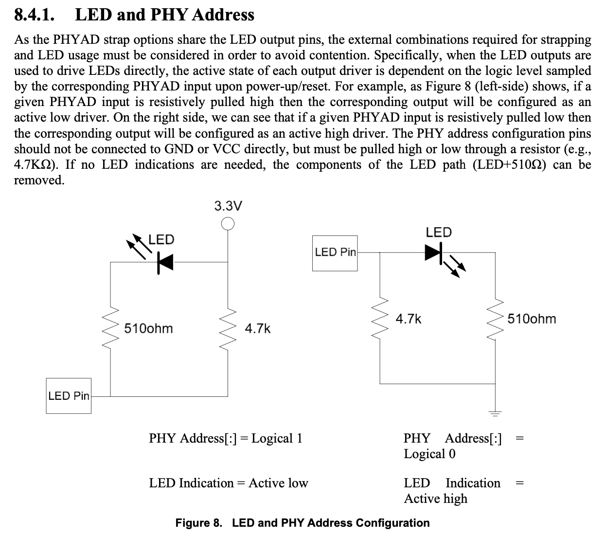
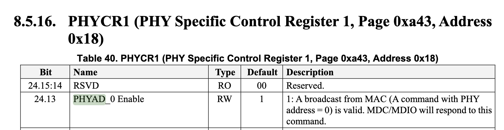

浅谈乱序执行 CPU（二：访存）
本文的内容已经整合到知识库中。
背景
之前写过一个浅谈乱序执行 CPU，随着学习的深入，内容越来越多，页面太长，因此把后面的一部分内容独立出来，变成了这篇博客文章。
本文主要讨论访存的部分。
本系列的所有文章：
本文的内容已经整合到知识库中。
之前写过一个浅谈乱序执行 CPU，随着学习的深入，内容越来越多，页面太长，因此把后面的一部分内容独立出来，变成了这篇博客文章。
本文主要讨论访存的部分。
本系列的所有文章：
FPnew 是一个比较好用的浮点计算单元，但它是 SystemVerilog 编写的，并且用了很多高级特性，虽然闭源软件是支持的，但是开源拖拉机经常会遇到这样那样的问题。所以一直想用 sv2v 把它翻译成 Verilog，但此时的 Verilog 还有很多复杂的结构，再用 yosys 转换为一个通用可综合的网表。
经过一系列踩坑，一个很重要的点是要用最新的 sv2v(v0.0.9-24-gf868f06) 和 yosys(0.15+70)。Debian 打包的 yosys 版本比较老，不能满足需求。
首先，用 verilator 进行预处理，把一堆 sv 文件合成一个：
注意这里用 sed 去掉了无用的行号信息。然后，用 sv2v 进行转换：
这里又用 sed 把不支持的 $fatal 去掉。最后，用 yosys 进行处理：
$ yosys -p 'read_verilog -defer merge.v' -p 'hierarchy -p fpnew_top' -p 'proc' -p 'opt' -p 'write_verilog -noattr output.v'
注意这里要用 read_verilog -defer，否则 yosys 会遇到 TAG_WIDTH=0 默认参数就直接例化，然后就出现 [0:-1] 这样的下标。read_verilog 的文档告诉了我们可以分两步做：
-defer
only read the abstract syntax tree and defer actual compilation
to a later 'hierarchy' command. Useful in cases where the default
parameters of modules yield invalid or not synthesizable code.
这样就得到了简化后的 verilog 代码：
module \$paramod$011e4d7ee08c34f246a38322dc9967d23ecc8081\fpnew_opgroup_block_A94B6_B7406 (clk_i, rst_ni, operands_i, is_boxed_i, rnd_mode_i, op_i, op_mod_i, src_fmt_i, dst_fmt_i, int_fmt_i, vectorial_op_i, tag_i, in_valid_i, in_ready_o, flush_i, result_o, status_o, extension_bit_o, tag_o, out_valid_o, out_ready_i
, busy_o);
wire _0_;
wire _1_;
wire [71:0] arbiter_output;
output busy_o;
wire busy_o;
input clk_i;
wire clk_i;
input [2:0] dst_fmt_i;
wire [2:0] dst_fmt_i;
output extension_bit_o;
wire extension_bit_o;
input flush_i;
// ...
endmodule
这样虽然比较丑陋，但是解决了 SystemVerilog 的问题。诚然，这样也失去了修改参数的能力，因为参数已经在 yosys 综合途中确定下来了。
综合很重要的一步是把 HDL 的逻辑变成一个个单元，这些单元加上连接方式就成为了网表。那么，基本单元有哪些，怎么决定用哪些基本单元？
这个就需要工艺库了，工艺库定义了一个个单元，单元的引脚、功能，还有各种参数，这样 Design Compiler 就可以按照这些信息去找到一个优化的网表。
网上可以找到一些 Liberty 格式的工艺库，比如 Nangate45，它的设定是 25 摄氏度，1.10 伏，属于 TT（Typical/Typical）的 Process Corner。
在里面可以看到一些基本单元的定理，比如 AND2_X1，就是一个 drive strength 是 1 的二输入与门：
cell (AND2_X1) {
drive_strength : 1;
pin (A1) {
direction : input;
}
pin (A2) {
direction : input;
}
pin (ZN) {
direction : output;
function : "(A1 & A2)";
}
/* ... */
}
这样就定义了两个输入 pin，一个输出 pin，还有它实现的功能。还有很重要的一点是保存了时序信息，比如：
lu_table_template (Timing_7_7) {
variable_1 : input_net_transition;
variable_2 : total_output_net_capacitance;
index_1 ("0.0010,0.0020,0.0030,0.0040,0.0050,0.0060,0.0070");
index_2 ("0.0010,0.0020,0.0030,0.0040,0.0050,0.0060,0.0070");
}
cell (AND2_X1) {
pin (ZN) {
timing () {
related_pin : "A1";
timing_sense : positive_unate;
cell_fall(Timing_7_7) {
index_1 ("0.00117378,0.00472397,0.0171859,0.0409838,0.0780596,0.130081,0.198535");
index_2 ("0.365616,1.893040,3.786090,7.572170,15.144300,30.288700,60.577400");
values ("0.0217822,0.0253224,0.0288237,0.0346827,0.0448323,0.0636086,0.100366", \
"0.0233179,0.0268545,0.0303556,0.0362159,0.0463659,0.0651426,0.101902", \
"0.0296429,0.0331470,0.0366371,0.0425000,0.0526603,0.0714467,0.108208", \
"0.0402311,0.0440292,0.0477457,0.0538394,0.0641187,0.0829203,0.119654", \
"0.0511250,0.0554077,0.0595859,0.0662932,0.0771901,0.0963434,0.133061", \
"0.0625876,0.0673198,0.0719785,0.0794046,0.0910973,0.110757,0.147656", \
"0.0748282,0.0800098,0.0851434,0.0933663,0.106111,0.126669,0.163872");
}
}
}
首先要看 cell_fall 后面的 template 是 Timing_7_7，可以看到 variable_1 和 variable_2 对应的是 input_net_transition 和 total_output_net_capacitance。这里 cell_fall 指的是输出 pin ZN 从 1 变成 0 的时候，这个变化从 A1 的变化传播到 ZN 的时间，这个时间和输入的 transition 时间（大概是从 0 到 1、从 1 到 0 的时间，具体从多少百分比到多少百分比见设置）和输出的 capacitance 有关，所以是一个查找表，查找的时候找最近的点进行插值。输出的 capacitance 取决于 wire load 和连接了这个输出的其他单元的输入。
除了 cell_fall/cell_rise 两种类型，还有 fall_transition 和 rise_transition，这就是输出引脚的变化时间，又作为后继单元的输入 transition 时间。
接下来，还能看到功耗的数据：
power_lut_template (Power_7_7) {
variable_1 : input_transition_time;
variable_2 : total_output_net_capacitance;
index_1 ("0.0010,0.0020,0.0030,0.0040,0.0050,0.0060,0.0070");
index_2 ("0.0010,0.0020,0.0030,0.0040,0.0050,0.0060,0.0070");
}
internal_power () {
related_pin : "A1";
fall_power(Power_7_7) {
index_1 ("0.00117378,0.00472397,0.0171859,0.0409838,0.0780596,0.130081,0.198535");
index_2 ("0.365616,1.893040,3.786090,7.572170,15.144300,30.288700,60.577400");
values ("2.707163,2.939134,3.111270,3.271119,3.366153,3.407657,3.420511", \
"2.676697,2.905713,3.073189,3.236823,3.334156,3.373344,3.387400", \
"2.680855,2.891263,3.047784,3.212948,3.315296,3.360694,3.377614", \
"2.821141,3.032707,3.182020,3.338567,3.444608,3.488752,3.508229", \
"3.129641,3.235525,3.357993,3.567372,3.743682,3.792092,3.808289", \
"3.724304,3.738737,3.808381,3.980825,4.147999,4.278043,4.311323", \
"4.526175,4.492292,4.510220,4.634217,4.814899,4.934862,5.047389");
}
rise_power(Power_7_7) {
index_1 ("0.00117378,0.00472397,0.0171859,0.0409838,0.0780596,0.130081,0.198535");
index_2 ("0.365616,1.893040,3.786090,7.572170,15.144300,30.288700,60.577400");
values ("1.823439,1.926997,1.963153,2.028865,1.957837,2.123314,2.075262", \
"1.796317,1.896145,1.960625,2.014112,2.050786,2.046472,1.972327", \
"1.811604,1.886741,1.955658,1.978263,1.965671,1.963736,2.071227", \
"1.997387,2.045930,2.092357,2.063643,2.099127,1.932089,2.131341", \
"2.367285,2.439718,2.440043,2.403446,2.305848,2.351146,2.195145", \
"2.916140,2.994325,3.044451,2.962881,2.836259,2.781564,2.633645", \
"3.687718,3.756085,3.789394,3.792984,3.773583,3.593022,3.405552");
}
}
可以看到，这也是一个查找表，也是按照输出的 rise/fall 有不同的功耗。巧合的是，功耗的查找表的 index_1/index_2 和上面的时序查找表是一样的。除了 internal power，还有 leakage power，定义如下：
leakage_power_unit : "1nW";
/* ... */
cell_leakage_power : 50.353160;
leakage_power () {
when : "!A1 & !A2";
value : 40.690980;
}
leakage_power () {
when : "!A1 & A2";
value : 62.007550;
}
leakage_power () {
when : "A1 & !A2";
value : 41.294331;
}
leakage_power () {
when : "A1 & A2";
value : 57.419780;
}
可以看到，它的 leakage power 取决于输入的状态，单位是 1nW。
再来看 Flip Flop 的定义：
cell (DFFRS_X1) {
ff ("IQ" , "IQN") {
next_state : "D";
clocked_on : "CK";
preset : "!SN";
clear : "!RN";
clear_preset_var1 : L;
clear_preset_var2 : L;
}
pin (D) {
direction : input;
capacitance : 1.148034;
fall_capacitance : 1.081549;
rise_capacitance : 1.148034;
timing () {
related_pin : "CK";
timing_type : hold_rising;
when : "RN & SN";
sdf_cond : "RN_AND_SN === 1'b1";
fall_constraint(Hold_3_3) {
index_1 ("0.00117378,0.0449324,0.198535");
index_2 ("0.00117378,0.0449324,0.198535");
values ("0.002921,0.012421,0.011913", \
"0.002707,0.008886,0.005388", \
"0.139993,0.148595,0.137370");
}
rise_constraint(Hold_3_3) {
index_1 ("0.00117378,0.0449324,0.198535");
index_2 ("0.00117378,0.0449324,0.198535");
values ("0.004193,0.015978,0.019836", \
"0.020266,0.031864,0.035343", \
"0.099118,0.113075,0.120979");
}
}
}
}
可以看到，这里的属性变成了 setup/hold 时间。
SRAM 也有类似的定义，通常是写在单独的 lib 文件中，根据 width 和 depth 生成，比如 fakeram45_32x64.lib：
cell(fakeram45_32x64) {
area : 1754.536;
interface_timing : true;
memory() {
type : ram;
address_width : 5;
word_width : 64;
}
pin(clk) {
direction : input;
min_period : 0.174 ;
internal_power(){
rise_power(scalar) {
values ("1498.650")
}
fall_power(scalar) {
values ("1498.650")
}
}
}
bus(wd_in) {
bus_type : fakeram45_32x64_DATA;
direction : input;
timing() {
related_pin : clk;
timing_type : setup_rising ;
rise_constraint(scalar) {
values ("0.050");
}
fall_constraint(scalar) {
values ("0.050");
}
}
internal_power(){
when : "(we_in)";
rise_power(scalar) {
values ("14.987");
}
fall_power(scalar) {
values ("14.987");
}
}
}
}
也可以类似地看到，它的输入 setup/hold，功耗，面积等等信息。
在给 Design Compiler 配置工艺库前，需要用 Library Compiler 先把 lib 格式转换为更紧凑的二进制 db 格式：
实测部分 Liberty 文件会报错，不知道有没有修复的办法。另外，不同版本的 Library Compiler 生成的格式也不大一样，但都是兼容的。
在 Design Compiler 中，设置当前工艺库命令：
set_app_var target_library xxx.db
set_link_var target_library xxx.db
# or
set_app_var target_library {xxx.db yyy.db}
set_link_var target_library {xxx.db yyy.db}
准备好工艺库以后，就可以开始编写综合脚本了，通常有这么些步骤：
# step 1: read source code & set top level module name
read_file -format verilog xxx.v
read_file -format vhdl yyy.vhdl
current_design xxx
# step 2: setup timing constraints
create_clock clock -period 1.0000 # 1GHz for example
# other timing constraints:
# e.g. set_input_delay/set_output_delay
# step 3: synthesis
link
uniquify
# use this if you want to ungroup all hierarchy
# ungroup -flatten -all
# use this to retime design
# set_optimize_registers
compile_ultra
# step 4: check & report
check_timing
check_design
report_design
report_area -hierarchy
report_power -hierarchy
report_cell
report_timing -delay_type max
report_timing -delay_type min
report_constraint -all_violators
report_qor
# step 5: export
write -format ddc -hierarchy -output xxx.ddc
write_sdc -version 1.0 xxx.sdf
write -format verilog -hierarchy -output xxx.syn.v
write_sdc xxx.sdc
根据需求，进行自定义的修改。综合完成后，可以看到生成的 xxx.syn.v 文件里都是一个个的 cell，比如：
AND2X2 U3912 ( .A(n4416), .B(n2168), .Y(n3469) );
OAI21X1 U3913 ( .A(n2872), .B(n4589), .C(n2461), .Y(n3471) );
DFFPOSX1 clock_r_REG147_S1 ( .D(n7634), .CLK(clock), .Q(n7773) );
还有一些比较特殊的 cell，比如 TIEHI/TIELO 就是恒定输出 1/0，用于门控时钟的 CLKGATE/ICG 等，还有一些综合阶段不会出现的 cell，在后续阶段会使用。
最近在尝试接触一些芯片前后端的知识。正好有现成的开源工具链 OpenROAD 来做这个事情，借此机会来学习一下整个流程。
首先 clone 仓库 OpenROAD-flow-scripts，然后运行：./build_openroad.sh，脚本会克隆一些仓库，自动进行编译。
编译中会找不到一些库，比如可能需要安装这些依赖：liblemon-dev libeigen3-dev libreadline-dev swig，此外运行的时候还需要 klayout 依赖。
如果遇到解决 cmake 找不到 LEMON 的问题，这是一个 BUG，可以运行下面的命令解决：
编译后整个目录大概有 4.8G，输出的二进制目录是 133M。
如果要跑一下样例里的 nangate45 工艺的 gcd 例子，运行：
这个测例的代码提供了这样一个接口：
module gcd
(
input wire clk,
input wire [ 31:0] req_msg,
output wire req_rdy,
input wire req_val,
input wire reset,
output wire [ 15:0] resp_msg,
input wire resp_rdy,
output wire resp_val
);
endmodule
从名字可以推断出，外部通过 req 发送请求到 GCD 模块，然后模块计算出 GCD 后再返回结果。
根据日志可以看到，从 verilog 到最终的 gds 文件，经过了这些步骤：
NAND2_X1 DFF_X1 等这样由工艺库定义的一些单元。这些步骤可以在仓库的 flow/Makefile 里面看得比较清晰，英文版摘抄如下：
最后生成的 gds，用 KLayout 打开，可以看到这个样子：

日志里可以看到，预测的总功耗是 1.71 mW，面积占用是 703 um^2。
还跑了一下其他样例设计的 gds，比如 ibex：

日志里可以看到，预测的总功耗是 10.1 mW，面积占用是 32176 um^2。
还有 tiny rocket：

日志里可以看到，预测的总功耗是 36.8 mW，面积占用是 52786 um^2。
ARM 的文档 Choosing the physical IP libraries 描述了 Channel length, Track height, Voltage threshold 等不同的选择。
综合来说，如果要更低的延迟，选择低 vt，小 c 和大 track，反之如果要更低的能耗，选择高 vt，大 c 和 小 track。
由于物理的特性比较复杂，工艺库里描述的也只是一个大致的模型，刻画了这些 cell 的特性，那么自然可以选取不同的模型。NLDM（上面举的例子就是 NLDM），CCS 就是常见的两个模型，相比之下，CCS 更精确，同时参数更多。更精确的还有直接用 SPICE 描述的电路。详细的对比可以看下面的参考文档。
两年前，我尝试过用 BSCAN JTAG 来配置 Rocket Chip 的调试，但是这个方法不是很好用，具体来说，如果有独立的一组 JTAG 信号，配置起来会更方便，而且不用和 Vivado 去抢，OpenOCD 可以和 Vivado hw_server 同时运行和工作。但是，苦于 VCU128 上没有 PMOD 接口，之前一直没考虑过在 VCU128 上配置独立的 JTAG。然后最近研究了一下，终于解决了这个问题。
前几天在研究别的问题的时候，看到 VCU128 文档中的这段话：
The FT4232HL U8 multi-function USB-UART on the VCU128 board provides three level-shifted
UART connections through the single micro-AB USB connector J2.
• Channel A is configured in JTAG mode to support the JTAG chain
• Channel B implements 4-wire UART0 (level-shifted) FPGA U1 bank 67 connections
• Channel C implements 4-wire UART1 (level-shifted) FPGA U1 bank 67 connections
• Channel D implements 2-wire (level-shifted) SYSCTLR U42 bank 501 connections
其中 Channel A 是到 FPGA 本身的 JTAG 接口，是给 Vivado 用的，如果是通过 BSCAN 的方式，也是在这个 Channel 上，但是需要经过 FPGA 自己的 TAP 再隧道到 BSCAN 上，比较麻烦。Channel B 和 C 是串口，Channel D 是连接 VCU128 上的 System Controller 的。之前的时候，都是直接用 Channel B 做串口，然后突发奇想：注意到这里是 4-wire UART，说明连接到 FPGA 是四条线，那是不是也可以拿来当 JTAG 用？
查询了一下 FT4232H 的文档，发现它的 Channel A 和 Channel B 是支持 MPSSE 模式的，在 MPSSE 模式下，可以当成 JTAG 使用：
| Signal | Channel A | Channel B |
|---|---|---|
| TCK | 12 | 22 |
| TDI | 13 | 23 |
| TDO | 14 | 24 |
| TMS | 15 | 25 |
对照 VCU128 的 Schematic 看，虽然引脚的编号不大一样，可以发现，Channel A 和 B 分别对应了 ADBUS0-4 和 BDBUS 0-4，对应到 schematic 上的名字是：
这一组是直接连到 FPGA 上专用的 JTAG 引脚，其中 TDO 是连接了额外的逻辑，可以把 FMC 接口上的 JTAG 连接成 daisy chain。
这里的 RXD/TXD 名字交换也是很容易看错，要小心，只要记住 FT4232H 要求的顺序一定是 TCK-TDI-TDO-TMS 即可。对应到 vivado 内的 xdc 就是这么写：
set_property -dict {PACKAGE_PIN BP26 IOSTANDARD LVCMOS18} [get_ports jtag_TCK]
set_property -dict {PACKAGE_PIN BN26 IOSTANDARD LVCMOS18} [get_ports jtag_TDI]
set_property -dict {PACKAGE_PIN BP22 IOSTANDARD LVCMOS18} [get_ports jtag_TDO]
set_property -dict {PACKAGE_PIN BP23 IOSTANDARD LVCMOS18} [get_ports jtag_TMS]
接下来，我们要把 Rocket Chip 的 JTAG 信号接出来。
配置 Rocket Chip 的 JTAG，大概需要如下几步：
最后一步的相关代码，首先，按照 spec 要求，把 DM 输出的 ndreset 信号连到整个 Rocket 的 reset 上：
// ndreset can reset all harts
val childReset = reset.asBool | target.debug.map(_.ndreset).getOrElse(false.B)
target.reset := childReset
接着，把 JTAG 的信号连到顶层：
val systemJtag = target.debug.get.systemjtag.get
systemJtag.jtag.TCK := io.jtag.TCK
systemJtag.jtag.TMS := io.jtag.TMS
systemJtag.jtag.TDI := io.jtag.TDI
io.jtag.TDO := systemJtag.jtag.TDO
除了 JTAG 信号以外，还需要配置 IDCODE 相关的变量：
systemJtag.mfr_id := p(JtagDTMKey).idcodeManufId.U(11.W)
systemJtag.part_number := p(JtagDTMKey).idcodePartNum.U(16.W)
systemJtag.version := p(JtagDTMKey).idcodeVersion.U(4.W)
最后这一部分比较关键：首先，JTAG 部分的 reset 是独立于其余部分的，这里简单期间就连到了外部的 reset，其实可以改成 FPGA program 的时候进行 reset，然后等时钟来了就释放，实现方法可以参考文末的链接。resetctrl 是给 DM 知道哪些核心被 reset 了，最后是调用 rocket chip 自带的函数。这里踩的一个坑是，传给 systemJtag.reset 一定得是异步的，因为这个时钟域的时钟都是 jtag 的 TCK 信号，所以很可能错过一开始的 reset 信号，所以这里要用异步的 reset。
// MUST use async reset here
// otherwise the internal logic(e.g. TLXbar) might not function
// if reset deasserted before TCK rises
systemJtag.reset := reset.asAsyncReset
target.resetctrl.foreach { rc =>
rc.hartIsInReset.foreach { _ := childReset }
}
Debug.connectDebugClockAndReset(target.debug, clock)
这部分是参考了 pulp 的 VCU118 中 jtag 信号的约束文件。照着抄就行：
create_clock -period 100.000 -name jtag_TCK [get_ports jtag_TCK]
set_input_jitter jtag_TCK 1.000
set_property CLOCK_DEDICATED_ROUTE FALSE [get_nets jtag_TCK_IBUF_inst/O]
set_input_delay -clock jtag_TCK -clock_fall 5.000 [get_ports jtag_TDI]
set_input_delay -clock jtag_TCK -clock_fall 5.000 [get_ports jtag_TMS]
set_output_delay -clock jtag_TCK 5.000 [get_ports jtag_TDO]
set_max_delay -to [get_ports jtag_TDO] 20.000
set_max_delay -from [get_ports jtag_TMS] 20.000
set_max_delay -from [get_ports jtag_TDI] 20.000
set_clock_groups -asynchronous -group [get_clocks jtag_TCK] -group [get_clocks -of_objects [get_pins system_i/clk_wiz_0/inst/mmcme4_adv_inst/CLKOUT1]]
set_property ASYNC_REG TRUE [get_cells -hier -regexp "system_i/rocketchip_wrapper_0/.*/cdc_reg_reg.*"]
和原版本稍微改了一下，一个区别是 set_clock_groups 的时候，第二个时钟参数用的是 Clocking Wizard 的输出，同时也是 Rocket Chip 自己的时钟输入；另一个区别是用的 ASYNC_REG 查询语句不大一样。我没有具体分析过这些约束为什么这么写，不确定这些约束是否都合理，是否都是需要的，没有测试过不带这些约束会不会出问题。
最后，采用如下的 OpenOCD 配置来连接：
# openocd config
# use ftdi channel 1
# vcu128 uart0 as jtag
adapter speed 10000
adapter driver ftdi
ftdi_vid_pid 0x0403 0x6011 # FT4232H
ftdi_layout_init 0x0008 0x000b # Output: TCK TDI TMS
ftdi_tdo_sample_edge falling
ftdi_channel 1 # channel B
reset_config none
set _CHIPNAME riscv
jtag newtap $_CHIPNAME cpu -irlen 5
set _TARGETNAME $_CHIPNAME.cpu
target create $_TARGETNAME.0 riscv -chain-position $_TARGETNAME
$_TARGETNAME.0 configure -work-area-phys 0x80000000 -work-area-size 10000 -work-area-backup 1
然后就可以连接到 Rocket Chip 上：
> openocd -f openocd.cfg
Open On-Chip Debugger 0.11.0-rc2
Licensed under GNU GPL v2
For bug reports, read
http://openocd.org/doc/doxygen/bugs.html
Info : auto-selecting first available session transport "jtag". To override use 'transport select <transport>'.
Info : Listening on port 6666 for tcl connections
Info : Listening on port 4444 for telnet connections
Info : clock speed 10000 kHz
Info : JTAG tap: riscv.cpu tap/device found: 0x10000913 (mfg: 0x489 (SiFive Inc), part: 0x0000, ver: 0x1)
Info : datacount=2 progbufsize=16
Info : Disabling abstract command reads from CSRs.
Info : Examined RISC-V core; found 1 harts
Info : hart 0: XLEN=64, misa=0x800000000094112d
Info : starting gdb server for riscv.cpu.0 on 3333
Info : Listening on port 3333 for gdb connections
> riscv64-unknown-elf-gdb
(gdb) target remote localhost:3333
Remote debugging using localhost:3333
0x00000000800001a4 in ?? ()
可以看到调试功能都正常了。
调试这个功能大概花了一天的时间，主要遇到了下面这些问题：
在使用 Rocket Chip 的时候，难免要和 Diplomacy 打交道，那么它比较特别的语法和使用方式会带来一些学习上的困难，并且文档也比较少。本人在学习 Diplomacy 源码的时候，记录了这个笔记，希望对读者有所启发。
尽量选择较新版本的 Chisel。Chisel v3.5 完善了编译器插件，使得生成的代码中会包括更多变量名信息。
版本：FIRRTL >= 1.5.0-RC2
代码：
new ChiselStage().execute(
Array("-X", "verilog", "-o", s"${name}.v"),
Seq(
ChiselGeneratorAnnotation(genModule),
CustomDefaultRegisterEmission(
useInitAsPreset = false,
disableRandomization = true
)
)
)
设置 disableRandomization=true 即可。useInitAsPreset 不建议开启。
设置 Chisel 生成 MinimumVerilog：
new ChiselStage().execute(
Array("-X", "mverilog", "-o", s"${name}.v"),
Seq(
ChiselGeneratorAnnotation(genModule)
)
)
此时代码中会保留更多原始 Chisel 代码的元素。
Rocket Chip 中 AXI4Bundle 直接生成的名字和标准写法不同，可以利用 Chisel3 3.5.0 的 DataView 功能进行重命名：
// https://www.chisel-lang.org/chisel3/docs/explanations/dataview.html
// use standard names
class StandardAXI4BundleBundle(val addrBits: Int, val dataBits: Int, val idBits: Int)
extends Bundle {
val AWREADY = Input(Bool())
val AWVALID = Output(Bool())
val AWID = Output(UInt(idBits.W))
val AWADDR = Output(UInt(addrBits.W))
val AWLEN = Output(UInt(8.W))
val AWSIZE = Output(UInt(3.W))
val AWBURST = Output(UInt(2.W))
val AWLOCK = Output(UInt(1.W))
val AWCACHE = Output(UInt(4.W))
val AWPROT = Output(UInt(3.W))
val AWQOS = Output(UInt(4.W))
val WREADY = Input(Bool())
val WVALID = Output(Bool())
val WDATA = Output(UInt(dataBits.W))
val WSTRB = Output(UInt((dataBits / 8).W))
val WLAST = Output(Bool())
val BREADY = Output(Bool())
val BVALID = Input(Bool())
val BID = Input(UInt(idBits.W))
val BRESP = Input(UInt(2.W))
val ARREADY = Input(Bool())
val ARVALID = Output(Bool())
val ARID = Output(UInt(idBits.W))
val ARADDR = Output(UInt(addrBits.W))
val ARLEN = Output(UInt(8.W))
val ARSIZE = Output(UInt(3.W))
val ARBURST = Output(UInt(2.W))
val ARLOCK = Output(UInt(1.W))
val ARCACHE = Output(UInt(4.W))
val ARPROT = Output(UInt(3.W))
val ARQOS = Output(UInt(4.W))
val RREADY = Output(Bool())
val RVALID = Input(Bool())
val RID = Input(UInt(idBits.W))
val RDATA = Input(UInt(dataBits.W))
val RRESP = Input(UInt(2.W))
val RLAST = Input(Bool())
}
object StandardAXI4BundleBundle {
implicit val axiView = DataView[StandardAXI4BundleBundle, AXI4Bundle](
vab =>
new AXI4Bundle(
AXI4BundleParameters(vab.addrBits, vab.dataBits, vab.idBits)
),
// AW
_.AWREADY -> _.aw.ready,
_.AWVALID -> _.aw.valid,
_.AWID -> _.aw.bits.id,
_.AWADDR -> _.aw.bits.addr,
_.AWLEN -> _.aw.bits.len,
_.AWSIZE -> _.aw.bits.size,
_.AWBURST -> _.aw.bits.burst,
_.AWLOCK -> _.aw.bits.lock,
_.AWCACHE -> _.aw.bits.cache,
_.AWPROT -> _.aw.bits.prot,
_.AWQOS -> _.aw.bits.qos,
// W
_.WREADY -> _.w.ready,
_.WVALID -> _.w.valid,
_.WDATA -> _.w.bits.data,
_.WSTRB -> _.w.bits.strb,
_.WLAST -> _.w.bits.last,
// B
_.BREADY -> _.b.ready,
_.BVALID -> _.b.valid,
_.BID -> _.b.bits.id,
_.BRESP -> _.b.bits.resp,
// AR
_.ARREADY -> _.ar.ready,
_.ARVALID -> _.ar.valid,
_.ARID -> _.ar.bits.id,
_.ARADDR -> _.ar.bits.addr,
_.ARLEN -> _.ar.bits.len,
_.ARSIZE -> _.ar.bits.size,
_.ARBURST -> _.ar.bits.burst,
_.ARLOCK -> _.ar.bits.lock,
_.ARCACHE -> _.ar.bits.cache,
_.ARPROT -> _.ar.bits.prot,
_.ARQOS -> _.ar.bits.qos,
// R
_.RREADY -> _.r.ready,
_.RVALID -> _.r.valid,
_.RID -> _.r.bits.id,
_.RDATA -> _.r.bits.data,
_.RRESP -> _.r.bits.resp,
_.RLAST -> _.r.bits.last
)
implicit val axiView2 = StandardAXI4BundleBundle.axiView.invert(ab =>
new StandardAXI4BundleBundle(
ab.params.addrBits,
ab.params.dataBits,
ab.params.idBits
)
)
}
// usage
val MEM = IO(new StandardAXI4BundleBundle(32, 64, 4))
MEM <> target.mem_axi4.head.viewAs[StandardAXI4BundleBundle]
有些时候，我们希望给所有模块添加一个名称前缀，防止可能出现的冲突。
在 Chisel 3 中，可以使用自定义 FIRRTL Transform 来实现这个功能。这一部分的实现参考了 chisel issue #1059：
import firrtl._
import firrtl.annotations.NoTargetAnnotation
import firrtl.options.Dependency
import firrtl.passes.PassException
import firrtl.transforms.DedupModules
// adapted from https://github.com/chipsalliance/chisel3/issues/1059#issuecomment-814353578
/** Specifies a global prefix for all module names. */
case class ModulePrefix(prefix: String) extends NoTargetAnnotation
/** FIRRTL pass to add prefix to module names
*/
object PrefixModulesPass extends Transform with DependencyAPIMigration {
// we run after deduplication to save some work
override def prerequisites = Seq(Dependency[DedupModules])
// we do not invalidate the results of any prior passes
override def invalidates(a: Transform) = false
override protected def execute(state: CircuitState): CircuitState = {
val prefixes = state.annotations.collect { case a: ModulePrefix =>
a.prefix
}.distinct
prefixes match {
case Seq() =>
logger.info("[PrefixModulesPass] No ModulePrefix annotation found.")
state
case Seq("") => state
case Seq(prefix) =>
val c = state.circuit.mapModule(onModule(_, prefix))
state.copy(circuit = c.copy(main = prefix + c.main))
case other =>
throw new PassException(
s"[PrefixModulesPass] found more than one prefix annotation: $other"
)
}
}
private def onModule(m: ir.DefModule, prefix: String): ir.DefModule =
m match {
case e: ir.ExtModule => e.copy(name = prefix + e.name)
case mod: ir.Module =>
val name = prefix + mod.name
val body = onStmt(mod.body, prefix)
mod.copy(name = name, body = body)
}
private def onStmt(s: ir.Statement, prefix: String): ir.Statement = s match {
case i: ir.DefInstance => i.copy(module = prefix + i.module)
case other => other.mapStmt(onStmt(_, prefix))
}
}
实现思路就是遍历 IR，找到所有的 Module 并改名，再把所有模块例化也做一次替换。最后在生成 Verilog 的时候添加 Annotation 即可：
new ChiselStage().execute(
Array("-o", s"${name}.v"),
Seq(
ChiselGeneratorAnnotation(genModule),
RunFirrtlTransformAnnotation(Dependency(PrefixModulesPass)),
ModulePrefix(prefix)
)
如果使用新的 MLIR FIRRTL Compiler，则可以利用 sifive.enterprise.firrtl.NestedPrefixModulesAnnotation annotation，让 firtool 来进行 prefix 操作：
package sifive {
package enterprise {
package firrtl {
import _root_.firrtl.annotations._
case class NestedPrefixModulesAnnotation(
val target: Target,
prefix: String,
inclusive: Boolean
) extends SingleTargetAnnotation[Target] {
def duplicate(n: Target): Annotation =
NestedPrefixModulesAnnotation(target, prefix, inclusive)
}
}
}
}
object AddPrefix {
def apply(module: Module, prefix: String, inclusive: Boolean = true) = {
annotate(new ChiselAnnotation {
def toFirrtl =
new NestedPrefixModulesAnnotation(module.toTarget, prefix, inclusive)
})
}
}
这个方法的灵感来自 @sequencer。唯一的缺点就是比较 Hack，建议 SiFive 把相关的类也开源出来用。
Chisel3 生成 Verilog/System Verilog 的时候会进行一些优化。如果想要关闭这些优化，可以使用：
--preserve-values=[none/named/all]，见 FIRRTL Dialect Rationale本文的内容已经整合到知识库中。
最近在《高等计算机系统结构》课程中学习缓存一致性协议算法，这里用自己的语言来组织一下相关知识的讲解。
最基础的缓存一致性思想有两种：
Write-once 协议定义了四个状态：
可见，当一个缓存状态在 R 或者 D，其他缓存只能是 I；而缓存状态是 V 的时候，可以有多个缓存在 V 状态。
Write-once 协议的特点是，第一次写的时候，会写入到内存（类似 Write-through），连续写入则只写到缓存中，类似 Write-back。
当 Read hit 的时候，状态不变。
Read hit: The information is supplied by the current cache. No state change.
当 Read miss 的时候，会查看所有缓存，如果有其他缓存处于 Valid/Reserved/Dirty 状态，就从其他缓存处读取数据，然后设为 Valid，其他缓存也设为 Valid。如果其他缓存处于 Dirty 状态，还要把数据写入内存。
Read miss: The data is read from main memory. The read is snooped by other caches; if any of them have the line in the Dirty state, the read is interrupted long enough to write the data back to memory before it is allowed to continue. Any copies in the Dirty or Reserved states are set to the Valid state.
当 Write hit 的时候，如果是 Valid 状态，首先写入内存，把其他 Cache 都设为 Invalid，进入 Reserved 状态，这意味着第一次写是 Write-through。如果是 Reserved/Dirty 状态，则不修改内存，进入 Dirty 状态，这表示后续的写入都是 Write-back。
Write hit: If the information in the cache is in Dirty or Reserved state, the cache line is updated in place and its state is set to Dirty without updating memory. If the information is in Valid state, a write-through operation is executed updating the block and the memory and the block state is changed to Reserved. Other caches snoop the write and set their copies to Invalid.
当 Write miss 的时候，这个行为 Wikipedia 上和上课讲的不一样。按照 Wikipedia 的说法，首先按照 Read miss 处理，再按照 Write hit 处理，类似于 Write Allocate 的思路。如果是这样的话，那么首先从其他缓存或者内存读取数据，然后把其他缓存都设为 Invalid，把更新后的数据写入内存，进入 Reserved 状态。相当于 Write miss 的时候，也是按照 Write-through 实现。
Write miss: A partial cache line write is handled as a read miss (if necessary to fetch the unwritten portion of the cache line) followed by a write hit. This leaves all other caches in the Invalid state, and the current cache in the Reserved state.
教材上则是 Write miss 的时候按照 Write-back 处理。如果其他缓存都是 Invalid 时，从内存里读取数据，然后写入到缓存中，进入 Dirty 状态。如果其他缓存是 Valid/Reserved/Dirty 状态，就从其他缓存里读取数据，让其他缓存都进入 Invalid 状态，然后更新自己的数据，进入 Dirty 状态。
MSI 协议比较简单，它定义了三个状态：
当 Read hit 的时候，状态不变。
当 Read miss 的时候，检查其他缓存的状态，如果都是 Invalid，就从内存里读取，然后进入 Shared 状态。如果有 Shared，就从其他缓存处读取。如果有 Dirty，那就要把其他缓存的数据写入内存和本地缓存，然后进入 Shared 状态。
当 Write hit 的时候，如果现在是 Shared 状态，则要让其他的 Shared 缓存进入 Invalid 状态，然后更新数据，进入 Modified 状态。如果是 Modified 状态，那就修改数据，状态保持不变。
当 Write miss 的时候，如果有其他缓存处于 Modified/Shared 状态，那就从其他缓存处读取数据，并让其他缓存进入 Invalid 状态，然后修改本地数据，进入 Modified 状态。如果所有缓存都是 Invalid 状态，那就从内存读入，然后修改缓存数据，进入 Modified 状态。
MESI 协议定义了四种状态：
当 Read hit 的时候，状态不变。
当 Read miss 的时候，首先会检查其他缓存的状态，如果有数据，就从其他缓存读取数据，并且都进入 Shared 状态，如果其他缓存处于 Modified 状态，还需要把数据写入内存；如果其他缓存都没有数据，就从内存里读取，然后进入 Exclusive 状态。
当 Write hit 的时候，进入 Modified 状态，同时让其他缓存进入 Invalid 状态。
当 Write miss 的时候，检查其他缓存的状态，如果有数据，就从其他缓存读取，否则从内存读取。然后，其他缓存都进入 Invalid 状态，本地缓存更新数据，进入 Modified 状态。
值得一提的是，Shared 状态不一定表示只有一个缓存有数据：比如本来有两个缓存都是 Shared 状态，然后其中一个因为缓存替换变成了 Invalid，那么另一个是不会受到通知变成 Exclusive 的。Exclusive 的设置是为了减少一些总线请求，比如当数据只有一个核心访问的时候，只有第一次 Read miss 会发送总线请求，之后一直在 Exclusive/Modified 状态中，不需要发送总线请求。
MOESI 定义了五个状态：
状态中，M 和 E 是独占的，所有缓存里只能有一个。此外，可以同时有多个 S，或者多个 S 加一个 O，但是不能同时有多个 O。
它的状态转移与 MESI 类似，区别在于：当核心写入 Owned 状态的缓存时，有两种方式：1）通知其他 Shared 的缓存更新数据；2）把其他 Shared 缓存设为 Invalid，然后本地缓存进入 Modified 状态。在 Read miss 的时候，则可以从 Owned 缓存读取数据，进入 Shared 状态，而不用写入内存。它相比 MESI 的好处是，减少了写回内存的次数。
AMD64 文档里采用的就是 MOESI 协议。AMBA ACE 协议其实也是 MOESI 协议，只不过换了一些名称，表示可以兼容 MEI/MESI/MOESI 中的一个协议。ACE 对应关系如下：
需要注意的是，SharedClean 并不代表它的数据和内存一致，比如说和 SharedDirty 缓存一致，它只是说缓存替换的时候，不需要写回内存。
Dragon 协议是一个基于更新的协议，意味着写入缓存的时候，会把更新的数据同步到拥有这个缓存行的其他核心。它定义了四个状态：
可以看到，E 和 M 都是独占的，如果出现了多个缓存有同一个缓存行，那就是若干个 Sc 和一个 Sm。
当 Read miss 的时候，在总线上检查是否有缓存已经有这个缓存行的数据，如果没有，则从内存读取并转到 Exclusive clean 状态；如果已经在其他缓存中，则从其他缓存读取，将其他缓存转移到 Shared clean/Shared modified 状态，然后该缓存转移到 Shared clean 状态。
当 Write miss 的时候，同样检查其他缓存的状态，如果是第一个访问的，就从内存读取，更新数据，然后转到 Modify 状态；如果不是第一个访问的，就进入 Shared modified 状态，并且让原来 Shared modified 的缓存进入 Shared clean 状态。
当 Write hit 的时候，如果状态是 Shared modified，这时候需要通知其他缓存更新数据；如果状态是 Shared clean，则要通知其他缓存更新数据的同时，让原来 Shared modified 的缓存进入 Shared clean 状态；如果状态是 Exclusive clean，则进入 Modify 状态。
在这里，Shared modified 的缓存负责在换出的时候，写入数据到内存中。
ACE 协议在 AXI 的基础上，添加了三个 channel：
此外，已有的 Channel 也添加了信号：
ACE-lite 只在已有 Channel 上添加了新信号，没有添加新的 Channel。因此它内部不能有 Cache，但是可以访问一致的缓存内容。
当 Read miss 的时候，首先 AXI master 发送 read transaction 给 Interconnect，Interconnect 向保存了这个缓存行的缓存发送 AC 请求，如果有其他 master 提供了数据，就向请求的 master 返回数据；如果没有其他 master 提供数据，则向内存发起读请求，并把结果返回给 master，最后 master 提供 RACK 信号。
当 Write miss 的时候，也是类似地，AXI master 发送 MakeUnique 请求给 Interconnect，Interconnect 向保存了该缓存行的缓存发送请求，要求其他 master 状态改为 Invalid；当所有 master 都已经 invalidate 成功，就向原 AXI master 返回结果。
上面的缓存一致性协议中，经常有这么一个操作：向所有有这个缓存行的缓存发送/接受消息。简单的方法是直接广播，然后接受端自己判断是否处理。但是这个方法在核心很多的时候会导致广播流量太大，因此需要先保存下来哪些缓存会有这个缓存的信息，然后对这些缓存点对点地发送。这样就可以节省一些网络流量。
那么，怎么记录这个信息呢？一个简单的办法（Full bit vector format）是，有一个全局的表，对每个缓存行，都记录一个大小为 N（N 为核心数）的位向量，1 表示对应的核心中有这个缓存行。但这个方法保存数据量太大：缓存行数正比于 N，还要再乘以一次 N，总容量是 O(N^2) 的。
一个稍微好一些的方法（Coarse bit vector format）是，我把核心分组，比如按照 NUMA 节点进行划分，此时每个缓存行都保存一个大小为 M（M 为 NUMA 数量）的位向量，只要这个 NUMA 节点里有这个缓存行，对应位就取 1。这样相当于是以牺牲一部分流量为代价（NUMA 节点内部广播），来节省一些目录的存储空间。
但实际上，通常情况下，一个缓存行通常只会在很少的核心中保存，所以这里有很大的优化空间。比如说，可以设置一个缓存行同时出现的缓存数量上限 (Limited pointer format)，然后保存核心的下标而不是位向量，这样的存储空间就是 O(Nlog2N)。但是呢，这样限制了缓存行同时出现的次数，如果超过了上限，需要替换掉已有的缓存，可能在一些场景下性能会降低。
还有一种方式，就是链表 (Chained directory format)。目录中保存最后一次访问的核心编号，然后每个核心的缓存里，保存了下一个保存了这个缓存行的核心编号，或者表示链表终止。这样存储空间也是 O(Nlog2N)，不过发送消息的延迟更长，因为要串行遍历一遍，而不能同时发送。类似地，可以用二叉树 (Number-balanced binary tree format) 来组织：每个缓存保存两个指针，指向左子树和右子树，然后分别遍历，目的还是加快遍历的速度，可以同时发送消息给多个核心。
最近我们设计的 Kintex 7 FPGA 开发板在测试 DDR SDRAM 的时候遇到了一个问题，因为采用了 Internel VREF，MIG 在配置的时候限制了频率只能是 400 MHz，对应 800 MT/s，这样无法达到 DDR 的最好性能。
首先，VREF 在 DDR 中是用来区分低电平和高电平的。在 JESD79-4B 标准中，可以看到，对于直流信号，电压不小于 VREF+0.075V 时表示高电平，而电压不高于 VREF-0.075V 时表示低电平。VREF 本身应该介于 VDD 的 0.49 倍到 0.51 倍之间。
在连接 FPGA 的时候，有两种选择：
对于 7 Series 的 FPGA，Xilinx 要求如下：
For DDR3 SDRAM interfaces running at or below 800 Mb/s (400 MHz),
users have the option of selecting Internal VREF to save two I/O
pins or using external VREF. VREF is required for banks containing
DDR3 interface input pins (DQ/DQS).
进一步，Xilinx 在 UltraScale 文档下解释了背后的原因：
The UltraScale internal VREF circuit includes enhancements compared
to the 7 Series internal VREF circuit. Whereas 7 Series MIG had datarate
limitations on internal VREF usage (see (Xilinx Answer 42036)), internal
VREF is recommended in UltraScale. The VREF for 7 Series had coarse steps
of VREF value that were based on VCCAUX. This saved pins but limited the
performance because VCCAUX did not track with VCCO as voltage went up and
down. Not being able to track with VCCO enforced the performance
limitations of internal VREF in MIG 7 Series. UltraScale includes several
changes to internal VREF including a much finer resolution of VREF for DDR4
read VREF training. Additionally, internal VREF is based on the VCCO supply
enabling it to track with VCCO. Internal VREF is not subject to PCB and
Package inductance and capacitance. These changes in design now give internal
VREF the highest performance.
用中文简单来说：
以 MA703FA-35T 开发板为例，它使用的 FPGA 是 Artix7 35T，内存是 DDR3，采用的是 External VREF。它采用了 TPS51200 Sink and Source DDR Termination Regulator 芯片，将芯片的 REFOUT 芯片接到 DRAM 的 VREFDQ 和 VREFCA 引脚上。
本文的内容已经整合到知识库中。
DRAM 分成很多层次：Bank Group，Bank，Row，Column，从大到小，容量也是各级别的乘积。
举例子：
那么总大小就是 4*4*32768*1024*4=2 Gb。
DRAM 的访问模式决定了访问内存的实际带宽。对于每次访问，需要这样的操作：
可以看到，如果访问连续的地址，就可以省下 ACT 命令的时间，可以连续的进行 RD/WR 命令操作。
除了显式 PRE 以外，还可以在某次读写之后自动进行 PRE：WRA(Write with Auto-Precharge) 和 RDA(Read with Auto-Precharge)。
总结一下上面提到的六种命令：
除此之外，还有一些常用命令：
DRAM 有很多参数，以服务器上的内存 MTA36ASF2G72PZ-2G3A3 为例子：
容量：每个 DRAM 颗粒 64K*1K*4*4*4=4Gb，不考虑 ECC，一共有 16*2=32 个这样的颗粒，实际容量是 16 GB。32 个颗粒分为两组，每组 16 个颗粒，两组之间通过 CS_n 片选信号区分。每组 16 个颗粒，每个颗粒 4 位 DQ 数据信号，合并起来就是 64 位，如果考虑 ECC 就是 72 位。
再举一个 FPGA 开发板上内存的例子：MT40A512M16LY-075E，参数如下：
13.50ns(=18*0.750)13.50ns(=18*0.750)13.50ns(=18*0.750)总大小：2*4*64K*1K*16=1GB。这个开发板用了 5 个 DRAM 芯片，只采用了其中的 4.5 个芯片：最后一个芯片只用了 8 位数据，这样就是 4.5*16=72 位的数据线，对应 64 位+ECC。
可以看到，上面的 DRAM Datasheet 里提到了三个时序参数：
如果第一次访问一个 Row 中的数据，并且之前没有已经打开的 Row，那么要执行 ACT 和 RD 命令，需要的周期数是 RCD+CL；如果之前已经有打开了的 Row，那么要执行 PRE，ACT 和 RD 命令，需要的周期数是 RP+RCD+CL。但如果是连续访问，虽然还需要 CL 的延迟，但是可以流水线起来，充分利用 DDR 的带宽。
如果把这个换算到 CPU 角度的内存访问延迟的话，如果每次访问都是最坏情况，那么需要 17+17+17=51 个 DRAM 时钟周期，考虑 DRAM 时钟是 1200MHz，那就是 42.5ns，这个相当于是 DRAM 内部的延迟，实际上测得的是 100ns 左右。
更严格来说，读延迟 READ Latency = AL + CL + PL，其中 AL 和 PL 是可以配置的，CL 是固有的，所以简单可以认为 READ Latency = CL。同理 WRITE Latency = AL + CWL + PL，可以简单认为 WRITE Latency = CWL。CWL 也是可以配置的，不同的 DDR 速率对应不同的 CWL，范围从 1600 MT/s 的 CWL=9 到 3200 MT/s 的 CWL=20，具体见 JESD79-4B 标准的 Table 7 CWL (CAS Write Latency)。
用 Micron 提供的 Verilog Model 进行仿真，可以看到如下的波形图：

首先看第一个命令，ACT_n=0, ADDR=0x009C, CAS_n_A15=0, CKE=1->1, CS_n=0, RAS_n_A16=0, WE_n_A14=1，查阅标准可知这是 ACT(Bank Activate) 命令。接着第二个命令，ACT_n=1, ADDR=0x0400, CAS_n_A15=0, CKE=1->1, CS_n=0, RAS_n_A16=1, WE_n_A14=1, A10=1, 这是 RDA(Read with Auto Precharge) 命令。若干个周期后，读取的数据从 DQ 上输出，一共 8 个字节的数据。
DRAM 的一个特点是需要定期刷新。有一个参数 tREFI，表示刷新的时间周期，这个值通常是 7.8us，在温度大于 85 摄氏度时是 3.9 us（见 JESD79-4B Table 131）。在刷新之前，所有的 bank 都需要 Precharge 完成并等待 RP 的时间，这时候所有的 Bank 都是空闲的，再执行 REF(Refresh) 命令。等待 tRFC(Refresh Cycle) 时间后，可以继续正常使用。
为了更好的性能，DDR4 标准允许推迟一定次数的刷新，但是要在之后补充，保证平均下来依然满足每过 tREFI 时间至少一次刷新。
如果研究 DRAM 内存控制器，比如 FPGA 上的 MIG，可以发现它可以配置不同的地址映射方式，例如：
就是将地址的不同部分映射到 DRAM 的几个地址：Row，Column，Bank。可以想象，不同的地址映射方式针对不同的访存模式会有不同的性能。对于连续的内存访问，ROW_COLUMN_BANK 方式是比较适合的，因为连续的访问会分布到不同的 Bank 上，这样性能就会更好。
此外，如果访问会连续命中同一个 Page，那么直接读写即可；反之如果每次读写几乎都不会命中同一个 Page，那么可以设置 Auto Precharge，即读写以后自动 Precharge，减少了下一次访问前因为 Row 不同导致的 PRE 命令。一个思路是在对每个 Page 的最后一次访问采用 Auto Precharge。
DDR SDRAM 的传输速率计算方式如下：
Memory Speed (MT/s) * 64 (bits/transfer)
例如一个 DDR4-3200 的内存，带宽就是 3200 * 64 = 204.8 Gb/s = 25.6 GB/s。但前面已经看到，除了传输数据，还需要进行很多命令，实际上很难达到 100% 的带宽。然后 CPU 可以连接多个 channel 的 DRAM，再考虑多个 CPU Socket，系统的总带宽就是
Memory Speed (MT/s) * 64 (bits/transfer) * Channels * Sockets
使用 MLC 等工具进行测试，计算实际与理论的比值，我测试得到的大概在 70%-90% 之间。
HBM 相比前面的 DDR SDRAM，它堆叠了多个 DRAM，提供多个 channel 并且提高了位宽。例如 Micron HBM with ECC，堆叠了 4/8 层 DRAM，提供 8 个 channel，每个 channel 的数据宽度是 128 位，以 3200 MT/s 计算，一个 HBM 芯片的传输速率最大是：
3200 (MT/s) * 128 (bits/transfer) * 8 (Channels) = 3276.8 Gb/s = 409.6 GB/s
所以一片 HBM 的传输速率就相当于 16 个传统的 DDR SDRAM：8 个 Channel 加双倍的位宽。128 位实际上就是把两片 64-bit DDR SDRAM 并起来了，可以当成一个 128 位的用，也可以在 Pseudo Channel 模式下，当成共享地址和命令信号的两个 DDR SDRAM 用。
Xilinx 的 Virtex Ultrascale Plus HBM FPGA 提供了 1800 (MT/s) * 128 (bits/transfer) * 8 (Channels) = 230.4 GB/s 的带宽，如果用了两片 HBM 就是 460.8 GB/s。暴露给 FPGA 逻辑的是 16 个 256 位的 AXI3 端口，AXI 频率 450 MHz，内存频率 900 MHz。可以看到，每个 AXI3 就对应了一个 HBM 的 pseudo channel。每个 pseudo channel 是 64 位，但是 AXI 端口是 256 位：在速率不变的情况下，从 450MHz 到 900MHz，再加上 DDR，相当于频率翻了四倍，所以位宽要从 64 位翻四倍到 256 位。
当然了，HBM 的高带宽的代价就是引脚数量很多。根据 HBM3 JESD238A，每个 Channel 要 120 个 pin，一共 16 个 channel（HBM2 是 8 channel，每个 channel 128 位；HBM3 是 16 channel，每个 channel 64 位），然后还有其他的 52 个 pin，这些加起来就 1972 个 pin 了。所以一般在 Silicon Interposer 上连接，而不是传统的在 PCB 上走线（图源 A 1.2V 20nm 307GB/s HBM DRAM with At-Speed Wafer-Level I/O Test Scheme and Adaptive Refresh Considering Temperature Distribution）：

所以在 HBM3 标准里，用 Microbump 来描述 HBM 的 pin。
可以理解为把原来插在主板上的内存条，通过堆叠，变成一个 HBM Die，然后紧密地连接到 CPU 中。但是另一方面，密度上去了，价格也更贵了。
A100 显卡 40GB PCIe 版本提供了 1555 GB/s 的内存带宽。根据倍数关系，可以猜测是 5 个 8GB 的 HBM，每个提供 1555 / 5 = 311 GB/s 的带宽，那么时钟频率就是 311 (GB/s) * 8 (bits/byte) / 128 (bits/transfer) / 8 (channels) / 2 (DDR) = 1215 MHz，这与 nvidia-smi -q 看到的结果是一致的。
进一步，A100 80GB PCIe 版本提供了 1935 GB/s 的带宽，按照同样的方法计算，可得时钟频率是 1935 (GB/s) / 5 * 8 (bits/byte) / 128 (bits/transfer) / 8 (channels) / 2(DDR) = 1512 MHz，与 Product Brief 一致。频率的提高是因为从 HBM2 升级到了 HBM2e。
A100 文档中的 Memory bus width 5120 的计算方式也就清楚了：128 (bits/transfer) * 8 (channels) * 5 (stacks) = 5120 (bits)。
H100 SXM5 升级到了 HBM3，内存容量依然是 80GB，但是时钟频率提高，内存带宽是 2619 (MHz) * 2 (DDR) * 128 (bits/transfer) * 8 (channels) * 5 (stacks) / 8 (bits/byte) = 3352 GB/s。
之前用过一些 RISC-V 核心，但是遇到调试相关的内容的时候就两眼一抹黑，不知道原理，出了问题也不知道如何排查，趁此机会研究一下工作原理。
为了调试 RISC-V 核心，需要很多部件一起工作。按 RISC-V Debug Spec 所述，有这么几部分：
可以看到，DMI 是实际的调试接口，而 JTAG 可以认为是一个传输协议。
首先什么是 JTAG？简单来说，它工作流程是这样的：
具体来说，JTAG 定义了两类寄存器：IR 和 DR。可以把 JTAG 理解成一个小的总线，我通过 IR 选择总线上的设备，通过 DR 向指定的设备上进行数据传输。比如在 RISC-V Debug Spec 里面，规定了以下的 5 位 IR 地址定义：
可以类比为有四个设备：BYPASS，IDCODE，dtmcs，dmi，对应了一些地址。如果要选择 dtmcs 这个设备，就在 ShiftIR 阶段向 TDI 输入二进制的 00001 即可。选择地址以后，再向 DR 写入时，操作的就是 dtmcs 设备。
那么，每个设备是怎么操作的呢？假如我已经通过 IR 设置了当前设备是 dtmcs，然后进入 ShiftDR 模式时，JTAG 会同时输入和输出。输入的就是当前要输入的数据，输出的就是原来寄存器里的结果，这个结果可能是固定的，也可能是表示上一次输入对应的结果。
举个例子：IDCODE 设备，在 CaptureDR 阶段的时候，DR 总会被设为一个固定的 IDCODE，表示设备的 ID；在 Shift 的时候，这个 IDCODE 就会一位一位从 TDO 中输出，而 TDI 输入的数据都会被忽略掉。BYPASS 设备则是一个 1 位的寄存器，直接从 TDI 到寄存器，寄存器到 TDO，数据就这么流过去了。
那么，在 RISC-V Debug 里面，JTAG 是怎么用的呢？我们可以这么类比一下：CaptureDR 相当于读取寄存器到缓冲区，然后 ShiftDR 在读取缓冲区的同时写入缓冲区，最后 UpdateDR 则是把缓冲区中的数据写入到寄存器中。这和 MMIO 有点类似，只不过每次操作不是单独的写和读，而是一次操作等于先读后写。
还是来看例子。dtmcs 这个设备表示的是 DTM 当前的状态，它有 32 位，读取的时候可以得到 DMI 的状态和配置，写入的时候可以 reset DMI。以 OpenOCD 代码 dtmcontrol_scan 为例子，它做了这么几个事情：
如果我只想读取 dtmcs 寄存器，那么只要设置写入数据为 0 即可，因为寄存器的设计里考虑到，如果写入全 0 是没有副作用的。同理，如果只想写入 dtmcs 寄存器，直接写入即可，因为设计的时候也保证读入寄存器的值是没有副作用的。这样，就在一个一读一写的操作中，实现了读或者写的功能。
那么，dmi 寄存器的用途是什么呢？我们前面提到过，JTAG 其实是一个传输层，而 DMI 又定义了一系列的寄存器，这会让人有点混乱，为啥到处都是寄存器？又是 JTAG 的 IR/DR，又是 dmi，dmi 又有一堆寄存器，这是什么关系？
首先我们来看 dmi 寄存器的定义。它由三部分组成：地址、数据和操作。由于 JTAG 每次操作是一读一写，虽然寄存器定义差不多，但是读和写的含义是不同的。
比如读的时候，它表示的是上一次 dmi 请求的结果。地址还是上一次请求的地址，数据则是上一次请求的结果，操作字段 0 表示成功，2 表示失败，3 表示还没执行完。而写的时候，地址和数据表示了对哪个寄存器写入什么数据，操作字段 0 表示无操作，1 表示读，2 表示写。
可以看到，如果想操作 dmi 定义的寄存器，需要如下几个步骤，这也是 OpenOCD dmi_op_timeout 要做的事情：
可以预期，如果首先写入了一个写操作，那么第二次 DR scan 得到的结果就是是否成功写入；如果首先写入了一个读操作，那么第二次 DR scan 得到的结果就是目标寄存器的值。
可能看起来还是很绕，确实很绕，因为这里有一个封装的过程。首先，DMI 本身定义了一些寄存器，这些寄存器读/写都有一定的含义，比如控制某一个 RISC-V 核心暂停等等。接着，JTAG 需要传输 DMI 的读取和写入操作，同时还要考虑读写尚未完成的情况，怎么办？结论就是通过 DR 来实现，写入 DR 时，按照 DR 中的操作数，对应到 DMI 的写入/读取；然后读取 DR 的时候，按照 DMI 的状态，告诉 OpenOCD 目前是否已经完成了上一次 DMI 操作，和操作的结果。
讲完 JTAG 以后，终于来到了 DMI。其实 DMI 就是一系列的寄存器，类似于 MMIO 设备，只不过访问方式不是我们通常的内存读写，而是通过 JTAG 的方式进行。它有很多个寄存器，摘录如下：
OpenOCD 的 examine 函数对 DMI 初始化并进行一些参数的获取。它的操作如下：
类似地，其他各种调试操作都是对这些 DMI 寄存器的读和写进行。RISC-V Debug Spec 附录里还提到了如何实现调试器的一些功能。
比如要读取 CPU 的寄存器（比如通用寄存器，CSR 等等）的话，有如下的方式：
第一种是 Abstract Command，直接向 DMI 写入要寄存器编号，就可以实现读/写。
第二种是 Program Buffer。它是一块小的代码存储，可以通过 DMI 向其中写入指令，比如 csrw s0, mstatus; ebreak，然后设置 s0 寄存器的值，再执行 Program Buffer 里的代码。
以 OpenOCD 代码为例，register_read_abstract 做了以下操作：
如果要读取内存的话，也有两种方法。一种是直接向 DMI 写入要读取的总线地址，然后再向指定的寄存器中读取数据。第二种还是利用 Program Buffer，写入一条 lw s0, 0(s0) 指令，然后先向 s0 写入地址，执行 Program Buffer 后，再把 s0 寄存器的值读出来。
那么，如何实现上面提到的 Abstract Command（比如读写寄存器，读写内存等）呢？Debug Spec 里面提到一种 Execution-Based 的方式，即在 Debug mode 下，核心依然在执行代码，只不过执行的是调试用的特殊代码。它做的就是轮询 Debug Module 等待命令，接受到命令以后，就去读写寄存器/内存，然后通过 data0-12 来传输数据。
这里还有一个比较特别的点，就是读取寄存器的时候，寄存器的编号是直接记录在指令中的，所以可以让 Debug Module 动态生成指令，然后让核心刷新 ICache 然后跳转过去。另外，还可以利用 dscratch0/dscratch1 寄存器来保存 gpr，然后用 dret 退出的时候再恢复，这样就有两个 gpr 可以用来实现功能了，实际上这已经够用了（一个技巧是，把地址设为 0 附近，然后直接用 zero 寄存器加偏移来寻址）。
在 dcsr 中，有一个值 step 表示是否在单步调试状态。设 step 为 1 的时候，如果不在 debug mode 中，只需要记录以及执行的指令数，当执行了一条指令后，视为下一个指令发生了进入 debug mode 的异常，这样就实现了单步调试。
调试器为了打断点，一种简单的方式是，往断点处写入 ebreak 指令，然后设置 dcsr 的 ebreakm/s/u，表示在这些特权集里，ebreak 是进入 debug mode，而不是原来的处理过程。然后，程序运行到 ebreak 指令的时候，进入 debug mode，openocd 发现核心进入 halted 状态后，让 gdb 继续进行调试。
硬件方面的实现方法就是，在遇到 ebreak 的时候，判断一下当前的特权集，结合 ebreakm/s/u 判断跳转到什么状态。此外，由于它会写入指令到内存，所以还需要执行 fence.i 指令，而 OpenOCD 需要依赖 progbuf 来执行 fence.i 指令，所以为了让这个方案工作，还得实现 Program Buffer。
当然了，软件断点也有局限性，比如内存不可写，比如 ROM，不能覆盖里面的指令，这样就有可能出问题。而且硬件断点性能也更好，不需要来回这样写指令。
ARM 有一种 semihosting 机制，就是处理器执行一种特定的指令序列，然后调试器看到整个序列的时候，不是进入 GDB 调试状态，而是去进行一些操作，比如输出信息，读写文件等等，然后结果通过 JTAG 写回去。OpenOCD 给 RISC-V 也做了类似的 semihosting 机制，只不过触发的指令序列不大一样，但是机制是类似的。
如果用过 Rocket Chip 仿真的或者以前的 ucb-bar/fpga-zynq 项目的话，会知道还有一个目的有些类似的东西：HTIF + fesvr，它是通过 fromhost/tohost 两组地址来进行通信，但是这个方法缺点是需要 poll tohost/fromhost 地址的内容，相对来说比较麻烦。
此外，debug spec 还有一个可选的功能，就是 Program Buffer，调试器可以往里面插入自定义的指令，然后结合 abstract command 进行操作。这样就可以做一些比较高效的操作，比如 OpenOCD 实现的批量写入内存：
并且设置 abstractauto，然后重复的操作是往 s1 里面写入新的数据，然后跳转到 program buffer，进行上面的 sw 操作，这样就可以一次 dmi 请求完成一次内存的写入，比较高效。
MIC: Many Integrated Core Architecture
Knights Corner:
4 路 SMT，AVX512 指令，32 KB L1I，32 KB L1D，每核心 512KB L2，乱序执行，一条 512 位计算流水线，每个周期双精度性能 512 / 64 * 2 = 16 FLOP/cycle。61 核 1.053GHz 双精度性能是 16 * 61 * 1.053 = 1028 GFLOPS。
向量寄存器分为四组，每组 128 位，两个 DP/四个 SP。SP 和 DP 计算共享乘法器，来优化面积。
Knights Landing:
核心：4 路 SMT，AVX512 指令，乱序执行，两条 512 位计算流水线，每个周期双精度性能 512 / 64 * 2 * 2 = 32 FLOP/cycle，如果是 64 核 1.3 GHz，总双精度性能是 32 * 64 * 1.3 = 2662 GFLOPS。一共 36 个 Tile，每个 Tile 有 2 Core + 2 VPU/core + 1MB 16-way L2，最大 72 个核心。
内存：6-channel 384GB DDR4 2400 RAM（理论 2400 * 6 * 8 = 115.2 GB/s），8-16GB 3D MCDRAM（400+ GB/s）。
内存：4 组，每组 8GB HBM2，带宽 256 GB/s（1024 bit * 2G），总共 32GB HBM2，带宽 1TB/s。Cache Line 大小 256 B。
核心：4 个 NUMA Node（Core Memory Group），每个 NUMA Node 包括 12 计算核，有 8MB 16 路的 L2 Cache。总共 48 计算核，4 辅助核。
指令集：ARMv8.2+SVE，512 位向量宽度，乱序执行，两个浮点流水线和两个整数流水线，每个周期双精度性能 512 / 64 * 2 * 2 = 32 FLOP/cycle，主频 2.2 GHz，按主频算理论双精度浮点性能 32 * 2.2 * 48 = 3.4 TFLOPS。文档里写的是双精度浮点性能 2.7 TFLOPS，单精度 5.4 TFLOPS，半精度 10.8 TFLOPS，8 位整数 21.6 TOPS，应该是按照实际测出来的算。TOP 500 配置是 7630848 核，对应 7630848 / 48 = 158976 个节点，Rpeak 是 537212 TFLOPS，那么每个节点是 537212 / 158976 = 3.38 TFLOPS，和上面的 3.4 接近。Linpack 跑出来的 Rmax 是 442010 TFLOPS，每个节点是 442010 / 158976 = 2.78 TFLOPS，和文档里说的比较接近。
部分主要特性：
R0=R0+R1*R2，A64FX 可以合并 R0=R3,R0=R0+R1*R2 两条为一条 R0=R3+R1*R2 指令| 型号 | 工艺 | Peak DP(TFLOPS) | 功耗 (W) | 性能功耗比 (TFLOPS/W) |
|---|---|---|---|---|
| P100 | 16 nm FinFET+ | 4.7 | 250 | 0.019 |
| V100 | 12 nm FFN | 7 | 250-300 | 0.023-0.028 |
| A100 | 7 nm N7 | 9.7 | 250-400 | 0.024-0.039 |
| 型号 | 内存容量 (GB) | 内存带宽 (GB/s) | 内存类型 | L2 缓存大小 | 寄存器堆大小 |
|---|---|---|---|---|---|
| P100 | 12-16 | 549-732 | 4096 bit HBM2 | 4096 KB | 14336 KB |
| V100 | 16-32 | 900 | 4096 bit HBM2 | 6144 KB | 20480 KB |
| A100 | 40-80 | 1555-2039 | 5120 bit HBM2 | 40960 KB | 27648 KB |
| 型号 | SM 数量 | CUDA 核心数 | FP64 核心数 | SM 频率 (MHz) |
|---|---|---|---|---|
| P100 | 56 | 3584 | 1792 | 1328 |
| V100 | 80 | 5120 | 2560 | 1380 |
| A100 | 108 | 6912 | 3456 | 1410 |
Sunway TaihuLight 的层次：
MPE 双精度性能：16 FLOP/cycle * 1.45 GHz = 23.2 GFlops
CPE 双精度性能：8 FLOP/cycle * 1.45 GHz = 11.6 GFlops
CPE 单精度性能：8 FLOP/cycle * 1.45 GHz = 11.6 GFlops
单节点双精度性能：4 * 8 * 8 * 11.6 + 4 * 23.2 = 3.0624 TFlops
Sunway TaihuLight 双精度性能：40 * 4 * 256 * 3.0624 = 125.435904 PFlops
MPE: 32KB L1I, 32 KB L1D, 256 KB L2(中文文献里写的是 512 KB)。乱序执行，4 译码，7 发射（5 整数 2 浮点）。指令预取，分支预测，寄存器重命名，预测执行。5 条整数流水线，2 条 256 位 SIMD 浮点流水线。
CPE：16KB L1I，无 DCache，有 64KB 可重构局部数据存储器（SPM scratch pad memory/LDM local data memory）。2 译码 2 发射，乱序执行，1 条 256 位 SIMD 流水线，1 条整数流水线。不同精度的 SIMD 宽度不同，单精度浮点运算 128 位（4 个单精度），双精度浮点运算 256 位（4 个双精度）。从 SPM 每个周期可以读取 32 字节的数据（正好一个 SIMD 寄存器）。
每个 core group 中还有一个 MC（Memory Controller），连接 8GB DDR3 memory，每个 MC 内存带宽 128 bit * 2133 MT/s = 34.128 GB/s，单节点内存带宽 4 * 34.128 = 136.512 GB/s。在 Stream Triad 测试，每个 core group 用 DMA 从内存到 SPM 传输数据带宽为 22.6 GB/s，而全局读写 gload/gstore 带宽只有 1.5 GB/s。访问全局内存需要 120+ 个周期。
8x8 矩阵中的从核可以在同行和同列方向上进行低延迟和高带宽的数据传递：2 个从核点对点通信延迟不超过 11 个周期，单个 core group 寄存器通信集合带宽达到 637 GB/s。
28nm 工艺流片，芯片 die 面积超过 500 mm^2，峰值功耗 292.7W，峰值能效比达 10.559 GFLOPS∕W（HPL 6.05 GFLOPS/W）。
SW26010-Pro 是升级版 SW26010，升级的内容在于：
6 * (8 * 8 + 1) = 390 个核心。频率也提高了，MPE 频率 2.1GHz，CPE 频率 2.25 GHz。SIMD 宽度扩展到 512 位。128 bit * 3200 MT/s = 51.2 GB/s；单节点总内存 96 GB，总内存带宽 51.2 * 6 = 307.2 GB/s。在新闻稿和 Sunway supercomputer architecture towards exascale computing: analysis and practice 文章中出现，没有在今年发出来的论文里实际采用，名称可能是新闻稿自己编的，我猜可能没有实际采用，而是做了 SW26010P。和 SW26010 区别：
8 * (8 * 8 + 1) = 520 个核心。最近需要在 VCU128 上搭建一个 SOC，然后想到可以把 OpenSBI、U-Boot 和 Linux 移植到这个平台上方便测试，于是又开始折腾这些东西。代码仓库都已经开源：
第一部分是基于之前 rocket2thinpad 在 Thinpad 上移植 Rocket Chip 的经验，做了一些更新，主要是因为 VCU128 的外设不大一样，同时我也要运行更复杂的程序，主要做了这些事情：
主要踩过的坑：
在 U-Boot 上花了比较多的时间，用它的目的主要是：
移植的时候，首先新建一个自定义的 board，然后自己写 defconfig 和 dts，其中 dts 可以参考 rocket chip 生成的 dts 文件。然后，按照各个外设的 device tree binding 去写，然后打开/关闭各个 CONFIG 开关。
对代码主要的改动是，实现了 DCache 的 flush 功能，因为以太网部分用了 DMA，所以要让外设看到内存的更改，这里采用的是 SiFive 的扩展指令 cflush.d.l1。由于编译器还不支持这个指令，就按照网上的方式去构造了汇编指令。实现完成以后，就可以用网络了。
一开始的时候，为了简单，直接在 M-mode 中运行 U-Boot，这样不需要 OpenSBI，同时 DTB 也是内置的。但后续为了运行 Linux，还是需要一个 SBI 实现：OpenSBI，然后在 S-mode 中运行 U-Boot，再引导到 Linux。
此外还花了很多努力来缩小 binary 大小，首先可以用 nm --size -r u-boot | head -20 来找到比较大的一些符号，不考虑其中 BSS 的部分（type=b），主要看哪些代码/数据比较占空间。
UPDATE: U-Boot 在 v2022.01 版本修复了一个 BUG，之前的版本在 riscv 架构下没有 reserve lmb region，使得加载 initrd 的时候，会覆盖掉自己的栈空间，这解释了之前的诸多玄学内存问题，升级到 v2022.01 后就好了。
OpenSBI 移植比较简单，直接参考 template 修改即可，主要就是串口的配置，其他基本不用改。然后，我把 U-Boot 作为 OpenSBI 的 Payload 放到 OpenSBI 的后面，此时要把 U-Boot 配置为 S-mode 模式。接着，遇到了新的问题：cflush.d.l1 指令只能在 M-mode 用，因此我在 OpenSBI 代码中处理了 trap，转而在 M-mode 里面运行这条指令。这样，就可以在 S-mode 里刷新 Cache 了。
Linux 目前可以 boot 到寻找 init，还没有碰文件系统，之后计划用 buildroot 打一个 initramfs 出来。为了在 U-Boot 中启动 Linux，用 U-Boot 的 mkimage 工具生成了 FIT 格式的 uImage，里面打包了 kernel image 和 dtb，就可以用 bootm 命令启动了，注意地址不要和加载地址重复。
此外还遇到一个坑：RV64 里面 Linux dts 的 address cell 得是 2（对应 64 位），否则会有错误。但 U-Boot 对这个没有做要求。
一开始的时候，AXI DMA 直接接到内存上，所以与 CPU 缓存是不一致的，网卡驱动需要经常地刷缓存。在 Rocket Chip 上，可以用 sifive 自己的 cflush 指令来刷缓存，但是它只能在 M 态执行，同时又支持虚拟地址，这种奇怪的设计就使得要在 OpenSBI，U-Boot 和 Linux 三处都添加逻辑：OpenSBI 处理 illegal instruction，如果发现是 cflush 指令，就再次 cflush；U-Boot 和 Linux 修改驱动，在合适的地方添加 cflush 指令。U-Boot 驱动比较简单，工作得比较好，但是 Linux 的网卡驱动怎么都改不好。
最后决定，打开 Rocket Chip 的 Frontend Bus，添加一个 AXI Slave 接口，然后让 AXI DMA 通过 AXI Slave 接入到 Rocket Chip 中，然后通过 TLBroadcast 实现缓存一致性。这样软件实现会比较简单，但是硬件就更复杂了。
本文的内容已经整合到知识库中。
之前一直没搞懂 Vivado 中 xdc 需要怎么编写，遇到一些必须要写 xdc 的时候就很头疼，不知道怎么写才可以得到正确的结果。今天分析了一下 AXI Quad SPI 的时序 xdc，终于理解了其中的含义。
AXI Quad SPI 是一个 SPI 的控制器，它支持 XIP（eXecute In Place）模式，即可以暴露一个只读 AXI Slave 接口，当接收到读请求的时候，就按照标准的 SPI Flash 命令去对应的地址进行读取，然后返回结果。由于不同厂家的 SPI Flash 支持有所不同，所以 IP 上的设置可以看到厂家的选择。
特别地，一个常见的需求是希望访问 Cfg（Configuration）Flash，亦即用来保存 Bitstream 的 Flash。当 FPGA 上电的时候，如果启动模式设置为 SPI Flash，FPGA 就会向 Cfg Flash 读取 Bitstream，Cfg Flash 需要连接到 FPGA 的指定引脚上，当 FPGA 初始化的时候由内部逻辑驱动，初始化完成后又要转交给用户逻辑。转交的方式就是通过 STARTUP 系列的 primitive。
通常，如果要连接外部的 SPI Flash，需要连接几条信号线到顶层，然后通过 xdc 把信号绑定到引脚上，然后引脚连接了一个外部的 SPI Flash。但由于 Cfg Flash 比较特殊，所以信号从 AXI Quad SPI 直接连到 STARTUP 系列的 primitive 上。如果是采用 STARTUPE2 原语的 7 系列的 FPGA，那么只有时钟会通过 STARTUPE2 pritimive 连接到 SPI Flash 上，其他数据信号还是正常通过顶层绑定；如果是采用 STARTUPE3 原语的 UltraScale 系列的 FPGA，那么时钟和数据都通过 STARTUPE3 primitive 连接到 SPI Flash。
把信号连好了只是第一步，因为外设对时序要求比较复杂，如果用一个比较高直接跑，很大可能就读取到错误的数据了。很贴心的是，AXI Quad SPI 已经在生成的文件里提供了一个样例的 xdc，在文档里也有体现。在这里，我使用的设备是 Virtex Ultrascale+ 的 FPGA，其他系列的 FPGA 会有所不一样。它内容如下：
#### All the delay numbers have to be provided by the user
#### Following are the SPI device parameters
#### Max Tco
set tco_max 7
#### Min Tco
set tco_min 1
#### Setup time requirement
set tsu 2
#### Hold time requirement
set th 3
#####################################################################################################
# STARTUPE3 primitive included inside IP for US+ #
#####################################################################################################
set tdata_trace_delay_max 0.25
set tdata_trace_delay_min 0.25
set tclk_trace_delay_max 0.2
set tclk_trace_delay_min 0.2
create_generated_clock -name clk_sck -source [get_pins -hierarchical *axi_quad_spi_0/ext_spi_clk] [get_pins -hierarchical */CCLK] -edges {3 5 7}
set_input_delay -clock clk_sck -max [expr $tco_max + $tdata_trace_delay_max + $tclk_trace_delay_max] [get_pins -hierarchical *STARTUP*/DATA_IN[*]] -clock_fall;
set_input_delay -clock clk_sck -min [expr $tco_min + $tdata_trace_delay_min + $tclk_trace_delay_min] [get_pins -hierarchical *STARTUP*/DATA_IN[*]] -clock_fall;
set_multicycle_path 2 -setup -from clk_sck -to [get_clocks -of_objects [get_pins -hierarchical */ext_spi_clk]]
set_multicycle_path 1 -hold -end -from clk_sck -to [get_clocks -of_objects [get_pins -hierarchical */ext_spi_clk]]
set_output_delay -clock clk_sck -max [expr $tsu + $tdata_trace_delay_max - $tclk_trace_delay_min] [get_pins -hierarchical *STARTUP*/DATA_OUT[*]];
set_output_delay -clock clk_sck -min [expr $tdata_trace_delay_min - $th - $tclk_trace_delay_max] [get_pins -hierarchical *STARTUP*/DATA_OUT[*]];
set_multicycle_path 2 -setup -start -from [get_clocks -of_objects [get_pins -hierarchical */ext_spi_clk]] -to clk_sck
set_multicycle_path 1 -hold -from [get_clocks -of_objects [get_pins -hierarchical */ext_spi_clk]] -to clk_sck
我们分段来看这个 xdc 都做了什么：
create_generated_clock -name clk_sck -source [get_pins -hierarchical *axi_quad_spi_0/ext_spi_clk] [get_pins -hierarchical */CCLK] -edges {3 5 7}
首先，它创建了一个时钟 clk_sck。CCLK 是 STARTUP 输出的实际时钟，会连接到 Cfg Flash 的时钟信号上。而 AXI Quad SPI 的 ext_spi_clk 会输出到 CCLK 上，因此这里是一个生成的时钟，并且指定上下边沿的位置。edges 参数有三个，分别表示上升、下降和上升沿分别的位置。1 表示源时钟的第一个上升沿，2 表示源时钟的第一个下降沿，以此类推，所以 {3, 5, 7} 的意思就是频率减半，相位差半个周期。
接着，最主要的就是，怎么设置延迟。可以看到，代码中首先定义了一些参数：
#### Max Tco
set tco_max 7
#### Min Tco
set tco_min 1
#### Setup time requirement
set tsu 2
#### Hold time requirement
set th 3
#### Trace delay
set tdata_trace_delay_max 0.25
set tdata_trace_delay_min 0.25
set tclk_trace_delay_max 0.2
set tclk_trace_delay_min 0.2
首先是 \(t_{co}\)，应该表示的是 SPI Flash 的时钟到输出的延迟。本文用的 SPI Flash 型号是 Micron MT25QU02GCBB8E12-0SIT，可以从它的 Datasheet 看到，时钟到输出的延迟应该是 Max 7ns：
因此 tco_max 设为 7，tco_min 默认即可，因为 Datasheet 中没有做要求。
然后 \(t_{su}\) 和 \(t_h\) 则是输入的 setup 和 hold time。类似的，可以查到 SPI Flash 的参数：
所以 tsu 设为 2.5，th 设为 2。
接下来则是 tdata 和 tclk 的 trace delay。这指的是从 FPGA 引脚到 SPI Flash 引脚的信号传输延迟。从严谨的角度来说，可以从板子的布线上测量长度来计算出来，不过这里就先用默认值了。一个简单的估算方法：光速 \(3*10^8 \text{m/s}\)，考虑电信号传播速度是光速的一半，可以得到延迟和长度的比值： \(0.06 \text{ns/cm} = 0.15 \text{ns/inch}\)。
那么，这些变量怎么参与到 input/output delay 的计算呢？
首先考虑 input delay。它指的是，从 SPI Flash 到 FPGA 的数据，相对于时钟的延迟。这个延迟由三部分组成：
a -> bb -> cc -> d因此总延迟就是 \(t_{clk}+t_{co}+t_{data}\)，就可以得到对应的设置：
set_input_delay -clock clk_sck -max [expr $tco_max + $tdata_trace_delay_max + $tclk_trace_delay_max] [get_pins -hierarchical *STARTUP*/DATA_IN[*]] -clock_fall;
set_input_delay -clock clk_sck -min [expr $tco_min + $tdata_trace_delay_min + $tclk_trace_delay_min] [get_pins -hierarchical *STARTUP*/DATA_IN[*]] -clock_fall;
接下来要考虑 output delay。虽然 output delay 也有 min 和 max，但其含义有所区别，需要分别考虑。
首先是 max，它对应的是 setup time。如果定义时间 0 为时钟的上升沿，沿更早的时间为正的时间轴，沿更晚的时间为负的时间轴。那么，我们希望的是，数据到达寄存器输入的时间大于 setup time，此时可以满足 setup 条件。那么，具体怎么算呢？注意，我们要考虑的是从 FPGA 数据输出到 SPI Flash 上时钟的延迟。
假设 FPGA CCLK 时钟上升沿在 \(0\) 时刻（下图的 a），那么 SPI Flash 时钟上升沿在 \(-t_{clk}\) 时刻（下图的 b）。假设 FPGA 数据输出时刻为 \(t_0\)（通常为正，下图的 c），那么 FPGA 数据输出到达 SPI Flash 在 \(t_0-t_{data}\) 时刻（下图的 d），我们期望 \(t_0-t_{data}\) 在 \(-t_{clk}\) 时刻之前（下图的 d -> b）至少 \(t_{su}\) 时间到达，可以得到表达式：
化简一下，就可以得到 \(t_0 > t_{data} + t_{su} - t_{clk}\)，如果考虑极端情况，右侧 \(t_{data}\) 取最大值，\(t_{clk}\) 取最小值，我们就可以得到约束：
set_output_delay -clock clk_sck -max [expr $tsu + $tdata_trace_delay_max - $tclk_trace_delay_min] [get_pins -hierarchical *STARTUP*/DATA_OUT[*]];
接下来考虑 output delay 的 min，这对应的是 hold time。我们希望数据到达 SPI Flash 寄存器的时候，距离上升沿时间超过了 \(t_h\)。还是一样的假设，如果 FPGA CCLK 时钟上升沿在 0 时刻（下图的 a），那么 SPI Flash 时钟上升沿在 \(-t_{clk}\) 时刻（下图的 b）。假设 FPGA 数据输出时刻为 \(t_0\)（下图的 c），那么 FPGA 数据输出到达 SPI Flash 在 \(t_0-t_{data}\) 时刻（下图的 d），要求满足 hold 条件，可以得到：
化简以后，可以得到 \(t_0 < t_{data} - t_{clk} - t_h\)，按照极限来取，\(t_{data}\) 取最小值，\(t_{clk}\) 取最大值，可以得到最终的时序约束：
set_output_delay -clock clk_sck -min [expr $tdata_trace_delay_min - $th - $tclk_trace_delay_max] [get_pins -hierarchical *STARTUP*/DATA_OUT[*]];
这样就可以实现 FPGA 和 SPI Flash 之间的正常通讯了。我觉得，这里比较绕的就是时间轴的定义，和我们平常思考的是反过来的。而且，这里的 min 和 max 并不是指 \([\min, \max]\)，而是 \((-\inf, \min] \cup [\max, \inf)\)。代入上面的数据，可以得到 \(\max=2.05, \min=-2.95, t_0 \in (\inf, -2.95] \cup [2.05, \inf)\)。如果变化的时刻距离时钟上升沿太接近，就会导致在 SPI Flash 侧出现不满足 setup 或者 hold 约束的情况。
也可以换个角度来理解 min 和 max：对于同一个周期的时钟和数据来说，数据相对时钟有一个延迟，这个延迟不能太小，至少要满足 hold，所以这是一个最小的延迟；同时这个延迟不能太大，最多需要满足下一个时钟上升沿的 setup，所以这是一个最大的延迟。如果从这个角度来看，那就是延迟在一个 \([\min, \max]\) 的范围内。但是，这样在计算的时候就需要把时钟周期纳入到 \(\max\) 的计算中，比如 \(\max=t_c-t_{su}\)。如果我们把坐标轴修改一下，原点变成原来的下一个时钟周期的上升沿，x 的正方向变成反向，就可以得到上面的形式了。
那么，更常见的 FPGA 是 7 系列的，比如 Artix 7，它采用的是 STARTUPE2 原语，只有时钟是通过 STARTUPE2 原语的 USRCCLKO 信号传递到 CCLK 引脚上的，其他数据信号都是需要在顶层信号绑定对应的引脚。在 AXI Quad SPI 文档中，描述了 STARTUPE2 所需要的时序约束，我们分段来分析一下。
# You must provide all the delay numbers
# CCLK delay is 0.5, 6.7 ns min/max for K7-2; refer Data sheet
# Consider the max delay for worst case analysis
set cclk_delay 6.7
# Following are the SPI device parameters
# Max Tco
set tco_max 7
# Min Tco
set tco_min 1
# Setup time requirement
set tsu 2
# Hold time requirement
set th 3
# Following are the board/trace delay numbers
# Assumption is that all Data lines are matched
set tdata_trace_delay_max 0.25
set tdata_trace_delay_min 0.25
set tclk_trace_delay_max 0.2
set tclk_trace_delay_min 0.2
### End of user provided delay numbers
可以看到，这一部分和上面 UltraScale+ 部分差不多，只是多一个 cclk_delay 变量，这是因为 Artix 7 中，时钟只能创建到 USRCCLKO 引脚上，但是实际 SPI Flash 接收到的时钟等于 USRCCLKO 到 CCLK 引脚，然后再通过 PCB 上的线传播到 SPI Flash，所以需要手动添加一个偏移，这个偏移就是 USRCCLKO 到 CCLK 的延迟，可以在 Artix 7 Data Sheet 里面看到：对于 1.0V，-2 速度的 FPGA，这个延迟最小值为 0.50ns，最大值为 6.70ns，这里采用了最大值。
所以，下面的约束，除了时钟部分以外，和上面分析的 UltraScale+ 时序约束计算方法是相同的。不同点在于，首先约束了从 AXI Quad SPI 到 STARTUPE2 的路由时延，从 0.1ns 到 1.5ns，然后又从 USRCCLKO 创建了一个分频 + 延迟 cclk_delay 纳秒的时钟，作为 SPI Flash 上 SCK 引脚的时钟。
# this is to ensure min routing delay from SCK generation to STARTUP input
# User should change this value based on the results
# having more delay on this net reduces the Fmax
set_max_delay 1.5 -from [get_pins -hier *SCK_O_reg_reg/C] -to [get_pins -hier
*USRCCLKO] -datapath_only
set_min_delay 0.1 -from [get_pins -hier *SCK_O_reg_reg/C] -to [get_pins -hier
*USRCCLKO]
# Following command creates a divide by 2 clock
# It also takes into account the delay added by STARTUP block to route the CCLK
create_generated_clock -name clk_sck -source [get_pins -hierarchical
*axi_quad_spi_1/ext_spi_clk] [get_pins -hierarchical *USRCCLKO] -edges {3 5 7}
-edge_shift [list $cclk_delay $cclk_delay $cclk_delay]
# Data is captured into FPGA on the second rising edge of ext_spi_clk after the SCK
falling edge
# Data is driven by the FPGA on every alternate rising_edge of ext_spi_clk
set_input_delay -clock clk_sck -max [expr $tco_max + $tdata_trace_delay_max +
$tclk_trace_delay_max] [get_ports IO*_IO] -clock_fall;
set_input_delay -clock clk_sck -min [expr $tco_min + $tdata_trace_delay_min +
$tclk_trace_delay_min] [get_ports IO*_IO] -clock_fall;
set_multicycle_path 2 -setup -from clk_sck -to [get_clocks -of_objects [get_pins
-hierarchical */ext_spi_clk]]
set_multicycle_path 1 -hold -end -from clk_sck -to [get_clocks -of_objects [get_pins
-hierarchical */ext_spi_clk]]
# Data is captured into SPI on the following rising edge of SCK
# Data is driven by the IP on alternate rising_edge of the ext_spi_clk
set_output_delay -clock clk_sck -max [expr $tsu + $tdata_trace_delay_max -
$tclk_trace_delay_min] [get_ports IO*_IO];
set_output_delay -clock clk_sck -min [expr $tdata_trace_delay_min - $th -
$tclk_trace_delay_max] [get_ports IO*_IO];
set_multicycle_path 2 -setup -start -from [get_clocks -of_objects [get_pins
-hierarchical */ext_spi_clk]] -to clk_sck
set_multicycle_path 1 -hold -from [get_clocks -of_objects [get_pins -hierarchical */
ext_spi_clk]] -to clk_sck
一个 Artix 7 上配置 STARTUP SPI Flash 的例子 io_timings.xdc 可供参考。
本文的内容已经整合到知识库中。
最早学习乱序执行 CPU 的时候，是在 Wikipedia 上自学的，后来在计算机系统结构课上又学了一遍，但发现学的和现在实际采用的乱序执行 CPU 又有很大区别，后来又仔细研究了一下，觉得理解更多了，就想总结一下。
本文主要讨论乱序执行的部分。
本系列的所有文章：
ATA 同时也是接口，图片如下。ATA 前身是 IDE，现在 ATA 叫做 PATA。

AHCI 可以简单理解为 PCIe <-> SATA 的转换器。AHCI 暴露为一个 PCIe 设备：
$ lspci -vv
00:1f.2 SATA controller: Intel Corporation C600/X79 series chipset 6-Port SATA AHCI Controller (rev 05)
Kernel modules: ahci
处理器通过 IO port/MMIO 访问 AHCI，然后 AHCI HBA 连接到 SATA 设备。
SATA 一般说的是接口。它一般分为两个部分，数据和电源。数据部分只有 7 个 pin，三个 GND 和两对差分线（A+A- B+B-），图片如下：

电源部分有 15 个 pin，有 GND 3.3V 5V 和 12V，图片如下：

常见的 SATA 盘有 2.5 英寸（small form factor, SFF）和 3.5 英寸（large form factor，LFF）两种规格。
M.2 又称 NGFF，有不同的 key 类型。常见的是 B 和 M：
都有部分引脚的位置是空的：

在这里可以看到两种 key 的 pinout。
可以看到，SATA pin 和 PCIe 的两个 lane 在 B 和 M key 中是一样的，物理上也是可以兼容的。
因为支持 SATA 和 PCIe，就有下面三种可能的使用方式：

SATA express 在 SATA 3.2 引入，它用的很少，被 U.2 取代。提供了 PCIe x2 或者 SATA x2。
U.2 也叫 SFF-8639。它和 SATA express 接口一样，但提供了 PCIe x4 或者 SATA x2。详见 pinout。

不同的协议的速度如下：
更完整的可以看List of interface bit rates。
Intel SSD DC P4618 Series 读写速度可以达到 40~50 Gb/s，它采用的是 PCIe 3.0 x8(64Gb/s) NVMe。
Intel SSD 545s Series 读写速度约 4Gb/s，采用的是 SATA 3.0 6Gb/s。
SAMSUNG 970 EVO 读写速度 20~30 Gb/s，它采用的是 PCIe 3.0 x4(32Gb/s) NVMe。
SAS 涉及的物理接口比较多，下面举一个具体的例子：DELL SCv2000
文档：https://dl.dell.com/topicspdf/storage-sc2000_owners-manual_en-us.pdf
它的背面：

它有四个前端接口 Mini-SAS High Density (HD)，即 SFF-8644；两个后端接口 Mini-SAS，即 SFF-8088。
RAID 卡例子：MegaRAID SAS 9361-8i
文档：https://docs.broadcom.com/doc/12351995
它的接口有：
SAS 标准：
可以从 https://www.t10.org/drafts.htm#SCSI3_SAS 免费下载尚未成为标准的 SAS-4.1 Working Draft。
查找 SFF 标准：https://www.snia.org/technology-communities/sff/specifications
中文介绍：https://www.163.com/dy/article/H8TGPEUA0532B75P.html
Mini Multilane 4X Unshielded Connector Shell and Plug
介绍：https://cs-electronics.com/sff-8087/
Mini SAS 4i 连接器就是 36 pin 的 SFF-8087，支持四路 SAS。i 表示用于 internal 连接。对应的 external 接口是 SFF-8088。
标准下载地址：https://members.snia.org/document/dl/25823
它的引脚定义可以在 SFF-9402 看到，它的引脚分为 A 面和 B 面，每面有 18 个 PIN，用途如下：
这四组差分对对应四路 SAS 或者 SATA。SGPIO 协议的标准是 SFF-8485，主要用途是控制硬盘状态灯，以及判断盘是否插入。
相关标准：
Mini Multilane 4X Shielded Connector Shell and Plug

标准下载地址：https://members.snia.org/document/dl/25824
Mini SAS 4x 连接器就是 26 pin 的 SFF-8088，支持四路 SAS。用于 external 连接。对应的 internal 接口是 SFF-8087。
SFF-8482: Serial Attachment 2X Unshielded Connector (EIA-966)

介绍：https://cs-electronics.com/sff-8482/
支持两路 SAS，29 个引脚。和 SATA 的接口大小一样，目的是为了可以兼容 SATA 和 SAS 盘，比较常见。
标准下载地址：https://members.snia.org/document/dl/25920
不同速率的版本：
SFF-8614: Mini Multilane 4/8X Shielded Cage/Connector (HDsh)

标准下载地址：https://members.snia.org/document/dl/25939
对应的 internal 版本是 SFF-8643: Mini Multilane 4/8X 12 Gb/s Unshielded Connector
名称：External Mini-SAS HD(High Density)
升级版本：
SFF-8644: Mini Multilane 4/8X 12 Gb/s Shielded Cage/Connector (HD12sh)
标准下载地址：https://members.snia.org/document/dl/25952
支持 SAS-3 和 PCIe 3.0
Multifunction 6X Unshielded Connector
又称 U.2

标准下载地址：https://members.snia.org/document/dl/26489
用途：
MiniLink 4/8X I/O Cable Assemblies
又称 OCuLink 1.0

标准下载地址：https://members.snia.org/document/dl/27937
用途：
硬盘性能一般会看如下几个指标：
CrystalDiskInfo 术语：
根据 SSD vs HDD - Should You Buy a Solid State Drive or Hard Disk Drive?，SSD 和 HDD 在顺序读写性能上的常见范围：
SSD 和 HDD 在随机读写性能上的常见范围：
可以看到，SSD 和 HDD 相比，顺序读写性能高，随机读写性能显著高。但实际上，这个数据有些过时了。
下面看一些具体的例子：
之前用的 newifi 路由器（Lenovo y1s）无线网总是出问题，于是换了一个新的支持 802.11ax 的路由器 Linksys E8450，目前在 openwrt snapshot 支持。Openwrt 的支持页面：Linksys E8450。
按照支持页面，下载固件：
$ wget https://downloads.openwrt.org/snapshots/targets/mediatek/mt7622/openwrt-mediatek-mt7622-linksys_e8450-squashfs-sysupgrade.bin
更新（2023-02-27）：固件已经从 snapshot 进入正式版，下载链接为 https://downloads.openwrt.org/releases/22.03.3/targets/mediatek/mt7622/openwrt-22.03.3-mediatek-mt7622-linksys_e8450-squashfs-sysupgrade.bin。如果已经替换为 UBI，则使用 https://downloads.openwrt.org/releases/22.03.3/targets/mediatek/mt7622/openwrt-22.03.3-mediatek-mt7622-linksys_e8450-ubi-squashfs-sysupgrade.itb 固件。
然后访问固件升级页面：http://192.168.1.1/config-admin-firmware.html#firmware，选择下载的 bin 文件。点击“开始升级”，然后等待。一段时间后，ssh 到路由器：
$ ssh root@192.168.1.1
The authenticity of host '192.168.1.1 (192.168.1.1)' can't be established.
ED25519 key fingerprint is SHA256:REDACTED.
No matching host key fingerprint found in DNS.
This key is not known by any other names
Are you sure you want to continue connecting (yes/no/[fingerprint])? yes
Warning: Permanently added '192.168.1.1' (ED25519) to the list of known hosts.
BusyBox v1.33.0 () built-in shell (ash)
_______ ________ __
| |.-----.-----.-----.| | | |.----.| |_
| - || _ | -__| || | | || _|| _|
|_______|| __|_____|__|__||________||__| |____|
|__| W I R E L E S S F R E E D O M
-----------------------------------------------------
OpenWrt SNAPSHOT, r16242-41af8735d4
-----------------------------------------------------
=== WARNING! =====================================
There is no root password defined on this device!
Use the "passwd" command to set up a new password
in order to prevent unauthorized SSH logins.
--------------------------------------------------
root@OpenWrt:~# uname -a
Linux OpenWrt 5.10.23 #0 SMP Wed Mar 17 19:55:38 2021 aarch64 GNU/Linux
配置 luci:
然后就可以网页访问看到 luci 了：Powered by LuCI Master (git-21.060.51374-cd06e70) / OpenWrt SNAPSHOT r16242-41af8735d4。
由于目前 luci 不支持 802.11ax 的配置，可以直接修改 uci 配置来达到效果：
root@OpenWrt:/# uci show wireless
root@OpenWrt:/# uci set wireless.radio1.htmode='HE80'
root@OpenWrt:/# /etc/init.d/network restart
'radio0' is disabled
注：实际上设置为 HE 开头的字符串即可，见 mac80211.sh。
再连接上 Wi-Fi 的时候就可以看到是 802.11ax 模式了。也在 OpenWRT 论坛 上分享了一下这个方案。
更新（2021-07-31）：目前最新的 luci 版本已经可以在网页上配置 802.11ax 模式了。
记录一下在学习画板子过程中学到的心得。
项目 jiegec/HT42B534USB2UART 采用的是 KiCad 5 编写的。目前正在做的另一个项目采用 lceda
AVCC 和 AGND。所以要特别注意 datasheet 里面不同的地的表示方法。最后，再用磁珠把 VCC 和 AVCC、GND 和 AGND 分别连接起来就可以了。可以参考 DE2 板子中第 19 页的音频部分设计 和 Staying well grounded。SPI_MISO 引脚的芯片，可能说明它是 write-only 的。JLC SMT 的基础库不需要换料费，如何寻找基础库中的元件：
200*10^2=20k，1003 表示 100*10^3=100k，3300 表示 330*10^0=330，330J 表示 330*10^-1=33，330K 表示 330*10^-2=3.3
例子：要找 0402 封装的 10k 欧电阻，搜索 0402WGF1003；要找 0603 封装的 33 欧电阻，搜索 0603WAF330。10*10^5pF=10^6pF=1uF，104 表示 10*10^4pF=10^5pF=0.1uF
例子：要找 0402 封装的 100nF 电容，搜索 CL05B104；要找 0603 封装的 1uF 电容，搜索 CL10A105。也可以只搜电容的数字部分，可以找到更多品牌。在传输线上，如果出现阻抗变化，就会导致信号出现反射，质量变差。因此，需要保证传输线的两端和传输线整个过程的阻抗一致。
阻抗设置为多少，一般要看协议的规定。确定好协议定义的阻抗以后，需要查看信号两端的芯片内部的阻抗，如果和协议不一致，需要额外添加电阻，并且电阻要尽量放在接近芯片的位置上。由于传输线在 PCB 上，所以和 PCB 厂商的工艺有关，需要去厂商的阻抗计算器上进行计算，例如 jlc 阻抗计算器。涉及到的参数有：


由于双层 PCB 的两层铜之间距离比较远（例如 57.68 mil），如果采用单端阻抗，那么需要比较大的线宽，例如用 jlc 阻抗计算器，50 欧姆阻抗需要 106.68 mil 的线宽。如果采用四层 PCB，最上面两层之间距离缩小了很多（例如 7.99 mil），此时即使用单端阻抗，用 jlc 计算得出只需要 13.2 mil 的线宽。所以双层 PCB 更适合使用共面单端的方式，此时传输线和地线放在了同一个平面，距离比较小，就不需要那么大的线宽。
这里的单位：1 mil = 0.0254 mm，1 inch = 1000 mil = 0.0254 m，1 oz = 1.37 mil = 0.0348 mm
Skid buffer 指的就是，对于 valid + ready 的握手信号，用空间（更多的逻辑）来换取时间（更好的时序）的一个硬件模块。
简单来说，背景就是，为了解决 valid 和 ready 信号在数据流水线上一路经过组合逻辑导致的时序问题，在中途加上一些寄存器来阻隔。当然了，代价就是延迟和面积，不过吞吐量还是需要保持的。
由于需求的不同，Skid buffer 也有不同的实现。目前，找到了四个实现，实现上有所不同，特性也不大一样。
由于我在 SpinalHDL 语言中重新实现了下面的这些 Skid buffer，所以按照 SpinalHDL 的 Stream 定义接口：
class SkidBufferCommon[T <: Data](
gen: => T
) extends Component {
val io = new Bundle {
val s = slave(Stream(gen))
val m = master(Stream(gen))
}
}
在这里，io.s 表示从上游取的数据，io.m 表示传递给下游的数据。
输出信号共有：io.s.ready、io.m.valid 和 io.m.payload。
第一个版本来自 ZipCPU：
博客地址：Building a Skid Buffer for AXI processing 代码地址：skidbuffer.v
它有两个参数，一个表示是否有额外的输出寄存器（outputReg），一个表示是否低功耗（lowPower）。
第二个版本来自 FPGACPU：
文章地址：Pipeline Skid Buffer
第三个版本来自 SpinalHDL Library 的 s2mPipe：
代码地址：Stream.scala L348
第四个版本来自 SpinalHDL Library 的 m2sPipe：
代码地址：Stream.scala L327
在研究了代码以后，可以看到这四个版本的区别：
| 版本 | ZipCPU w/ outputReg | ZipCPU w/o outputReg | FPGACPU | S2M | M2S |
|---|---|---|---|---|---|
| io.s.ready | Reg | Reg | Reg | Reg | Comb |
| io.m.valid | Reg | Comb | Reg | Comb | Reg |
| io.m.payload | Reg | Comb | Reg | Comb | Reg |
| latency | 1 | 0 | 1 | 0 | 1 |
| buffer 数量 | 1 | 1 | 2 | 1 | 1 |
注：
io.s.fire 到 io.m.fire 的延迟为了确认上面这些类型的 Skid Buffer 都可以正常工作，按照 ZipCPU Skid Buffer 的文章，也照着写了几个 property：
1: 在 valid && ~ready 的时候，valid 需要继续保持为高，并且 payload 不变：
// When valid goes high, data is stable and valid stays high before ready
when(past(stream.valid && ~stream.ready && ~outerReset)) {
slaveAssume(stream.valid);
if (dataStable) {
slaveAssume(stable(stream.payload.asBits));
}
}
2: 在 reset 释放的第一个周期里，valid 不能为高：
参考 AXI 标准 (IHI0022E Page 38 A3.1.2) 原文：
The earliest point after reset that a master is permitted to begin driving ARVALID, AWVALID, or WVALID HIGH is at a rising ACLK edge after ARESETn is HIGH.
// Valid is low in the first cycle after reset falls
when(pastValid && past(outerReset) && ~outerReset) {
slaveAssume(~stream.valid);
}
3: 添加 cover property，要求 io.s 和 io.m 可以连续若干个周期 valid && ready，保证吞吐率：
cover(
pastValid && genPast(pastValid, null, cycles) && genPast(
~outerReset,
null,
cycles
) && genPast(stream.fire, payload, cycles)
)
采用 yosys-smtbmc 工具验证了以上四种 Skid buffer 都满足这些属性。
本文的内容已经整合到知识库中。
最近逐渐接触到了一些高速的以太网的接口，被一大堆的名字搞得有点懵，所以特意学习了一下并整理成这篇博客。
在下文里，经常可以看到类似 100BASE-TX 这种写法，它表示的意思是：
详见 Wikipedia - Ethernet Physical Layer # Naming Conventions 和 IEEE 802.3 1.2.3 节 Physical Layer and media notation：
The data rate, if only a number, is in Mb/s, and if suffixed by a “G”, is in
Gb/s. The modulation type (e.g., BASE) indicates how encoded data is
transmitted on the medium. The additional distinction may identify
characteristics of transmission or medium and, in some cases, the type of PCS
encoding used (examples of additional distinctions are “T” for twisted pair,
“B” for bidirectional optics, and “X” for a block PCS coding used for that
speed of operation). Expansions for defined Physical Layer types are included
in 1.4.
和 IEEE 802.3 1.4 节 Definitions 中的几个例子：
连接器（connector）一般来说指的就是线缆和网络设备之间的物理接口了。常见的有：
对于光纤的接口，注意购买的时候要和光模块对应，不然可能插不进去。常见的有 LC-LC，SC-LC，SC-SC 等等，表示线的两端分别是什么接口。
这其实就是大家常见的 RJ45 里面 8 根线对应的信号，在十兆和百兆的时候，需要区分 MDI 和 MDI-X，在同种类型的端口之间用交叉线，在不同类型的端口之间用直通线。在后来，有了 Auto MDI-X，也就是会按照实际情况自动检测并且匹配。从千兆开始，设备都支持 Auto MDI-X 了，所以线本身是交叉还是直通就无所谓了。
SFP 是很常见的，特别是在高速的网络之中。而它又分为几种，对应不同的速率：
可以看到，名字前面加了个 Q（Quad），速率就翻了 4 倍，因为有 4 个 lane，同时物理接口的尺寸也变大了。所以，不带 Q 的 SFP 的物理尺寸都一样，带 Q 的 SFP 物理尺寸都一样大，但后者比前者大一些（SFP 是 113.9 mm^2，QSFP 是 156 mm^2）。OSFP 又比 QSFP 更大一些，O 表示 Octal，就是 8 个 lane 的意思。
可以在 400G QSFP Transceiver Types and Fiber Connections 和 400G OSFP Transceiver Types Overview 看到 QSFP-DD 和 OSFP 的对比。
通常，网络设备也会支持把一个 QSFP 接口拆成多个 SFP 接口来使用，比如有的线，一边是 QSFP28，另一边是 4xSFP28，只要设备支持即可，目的是节省空间。
SFP 标准 SFF INF-8074 规定了 20 根信号线，正反面各 10 根，重要的是下面的这些（括号里写得是 Pin 的编号）：
可以看到，收和发各有一个差分对共 4 条数据线。相对应的，QSFP 收和发各有四对差分对共 16 条数据线，一共 38 根线。并且有一些信号是复用了同样的 pin，这样的设计可以节省一些 pin，是很常见的。
有时候，还会遇到各种 MII 接口，也就是 MAC 和 PHY 之间的接口。有时候，还会伴随着 MDIO 接口，来进行控制信息的传输。它又分不同的类型：
有的时候，MAC 和 PHY 是独立的，比如很多常见的 FPGA 开发板，在使用千兆网的时候，在板子上是 PHY 芯片，从 FPGA 到 PHY 通过 RGMII 连接，然后 PHY 再连接到 8P8C（RJ45）的连接器上。一般还会把 MDIO 也接到 FPGA 上面。如果有多个 PHY，就会吧 MDIO 通过总线的方式合并起来，给每个 PHY 配置不同的地址（一般是在指定的 PIN 上设置上拉/下拉电阻实现），就可以保证不冲突的访问。
扩展阅读：KXZ9031RNX Datasheet
上面比较常见的是 GMII/RGMII/SGMII。其中比较特殊的是 SGMII，首先可以发现它信号很少，只有两对差分线 TX_P TX_N RX_P RX_N，其中时钟是可选的，因为可以从数据中恢复。你可能感到很奇怪，那么其他的信号，比如 DV/ER/CRS 等都去哪里了呢？其实是因为，SGMII 采用了 8b/10b 的编码的同时，把这些控制信号通过一定的方式顺便编码进去了。具体来说，就是从 8 位的数据信号编码为 10 位的时候，有一些特殊的 10 位符号是没有对应 8 位的数据的，因此可以用这些特殊符号来表示一些信号，比如用 SPD（Start_of_Packet Delimiter，对应 /S/）和 EPD（End_of_Packet Delimiter，对应 /T/R/ 等）表示传输数据的开始和结尾，对应 TX_EN/RX_DV 信号；用 Error_Propagation（/V/）表示错误，对应 RX_ER 信号等等。所以，SGMII 其实还是一个 GMII 的变种，只不过采用 SerDes 的方式减少了引脚，MAC 内部或者 PHY 内部也是经过一个 GMII-SGMII 的转换，而其余部分是一样的。
关于 8b/10b 的编码方式，可以阅读 IEEE 802.3 标准中的 Table 36–1a—Valid data code-groups，里面提到了两类的 Code Group：D 打头的，表示数据，有 256 种，从 8b 映射到 10b 的表达方式，并且为了保持直流平衡，有一种到两种表示方法。此外还有 12 个特殊的 Code Group：K 打头，它们的 10b 表达方式不会和数据冲突。表 Table 36–3—Defined ordered sets 中定义了 K 打头的 Code Group 含义：
IEEE 802.3 Figure 36-4 中给了一个例子，就是在发送一段数据的时候，首先是 /I/，然后 /S/，接着一系列的 /D/，最后结束的时候 /T/R/I/。
扩展阅读：
1000BASE-X 在 802.3 Clause 36 中定义，它的层级是这样的：

它支持三种不同的介质，对应了三个 PMD 层，也就是 LX、SX 和 CX。这些体现在设备上，其实就是不同的 SFP 模块。SFP 模块实际上就是图中的 PMD 层，SFP 接口上连接的是 1000BASE-X 的 PCS/PMA，这也就是为什么说在带有 SFP 的 FPGA 上，Xilinx 的 IP 叫做 1G/2.5G Ethernet PCS/PMA。在这里，PCS 和 PMA 层在 FPGA 内部通过 IP 实现，通过 PCB 连接到 SFP 上，光模块就是 PMD 层。见下图：

左边通过 GMII 连接到内部的 MAC，右边连接到 SFP 上，通过光模块，连接到光纤。这里光模块只需要负责光电转换。另一种比较常见的形式，就是 MAC 在 FPGA 内部，PHY（包括 PCS/PMA/PMD）都在 FPGA 外部，此时 FPGA IO 上就是各种 MII。
那么 SFP 电口模块是怎么工作的呢？我们知道，电口采用的是 1000BASE-T 标准。实际上，它里面有一个 PHY 芯片，发送的时候，首先解码 1000BASE-X 变回原始数据，再按照 1000BASE-T 的方式编码再发出去；接收的时候，按照 1000BASE-T 进行解码，再重新编码为 1000BASE-X 发送给 PMA 层。
还有一类电口模块，与上面不同的地方在于，SFP 上走的是 SGMII，而不是 1000BASE-X。这两种模式没有太大的区别，都是两对差分线，一收一发，所以很多时候二者是同时支持，可以切换的。例如 Cisco Compatible 10/100/1000BASE-T SFP SGMII Copper RJ-45 100m Industrial Transceiver Module (LOS) 就是在 SFP 上走 SGMII 协议。
推荐阅读 Designing a Copper SFP using the VSC8221 10/100/1000BASE-T PHY，它里面讲了如何将 VSC8221 芯片用于电口模块：VSC8221 芯片一头是 1000BASEX（又称 802.3z SerDes，802.3z 就是 1000BASE-X）或者 SGMII，另一头是 1000BASE-T MDI。
在 IEEE 802.3 的 Clause 24 和 25 中定义。
100BASE-TX 的物理层分为 PCS，PMA，PMD。与 MAC 的连接是 MII 接口，MII 频率是 25MHz，每周期传输 4 bit 的数据。然后 PCS 负责把 4 bit 的数据通过 4B/5B 转换为 5 bit 的 code group；PMA 使用 NRZI 进行编码；PMD 层借用了 FDDI 协议的 PMD 层，只使用 MDI 的 1-3 和 6 四根线传输，两对差分对，一收一发。
在 IEEE 802.3ab-1999 中定义，具体位置是 Clause 40。

物理层往上通过 GMII 连接 MAC，往下通过 MDI 连接其他网络设备。物理层又包括 PCS 和 PMA。
1000BASE-T 使用四对差分线，每对差分线上都是全双工传输，波特率 125Mbaud，symbol 的范围是 {2, 1, 0, -1, -2}，通过 PAM5 传输。
具体来讲，PCS 从 MAC 的 GMII 接口接收要发送的数据，GMII 是 125MHz，每个周期 8 位数据。这些数据与 scrambler 一起，生成 9 位的 Sd_n[8:0]，然后再编码为 (TA_n, TB_n, TC_n, TD_n)，也就是在四对差分线上传输的 symbol，取值范围是 [-2, 2]。简单总结一下，就是每个周期 8 位数据，先变成 9 位数据，再变成 4 个 symbol，每个 symbol 取值范围是 -2 到 2，这就叫做 8B1Q4，converting GMII data (8B-8 bits) to four quinary symbols (Q4) that are transmitted during one clock (1Q4)，把 8 位的数据转换为四个 symbol，每个 symbol 有五种取值（Quinary 表示 5）。
MDIO 是 MAC 和 PHY 之间一个低速的通信接口，定义在 IEEE 802.3 Clause 45，可以用来配置一些寄存器。它支持读和写，多个 PHY 可以共享一个 MDIO 总线，通过 5 位的地址区分。为了让 PHY 分配到不同的地址，PHY 通常会通过某些引脚的上下拉来决定它自己的 MDIO 地址，这样可以避免冲突。以 RTL8201F 为例，它的 PHY 的 MDIO 地址配置与 LED 输出引脚是共享的，根据外部电路的上下拉不同，配置 MDIO 地址的最低两位：

也就是说，这款芯片的 MDIO 地址可以在二进制的 00000 到 00011 之间取。但不建议用 00000 地址，这是因为一些芯片会把 00000 重定义为广播，此时总线上的所有 PHY 芯片都要响应目标地址为自己的地址（非 00000）或者 00000 地址的请求（见 MDIO Addressing）。RTL8211 在它的文档里描述了这个行为：

这样的好处是可以同时往多个 PHY 芯片写入寄存器，但如果要从 00000 地址读寄存器的话，一旦多个 PHY 同时响应，MDIO 总线上就会出现冲突。不过如果只有一个 PHY 芯片连接到 MDIO 总线上，那么让 MAC 通过 00000 地址访问 PHY 也是可以的。
我是 11.12 的时候在 Apple Store 上下单的，选的是 MacBookAir，带 M1 芯片，8 核 CPU + 8 核 GPU，加了一些内存和硬盘。今天（11.19）的时候顺丰到货，比 Apple Store 上显示的预计到达时间 21-28 号要更早。另外，我也听朋友说现在一些线下的店也有货，也有朋友直接在京东上买到了 Mac mini，总之第一波 M1 的用户最近应该都可以拿到设备了。
现在这篇博客，就是在 ARM MBA 上编写的，使用的是 Intel 的 VSCode，毕竟 VSCode 的 ARM64 版不久后才正式发布。
从外观来看，一切都和 Intel MBA 一样，包装上也看不出区别，模具也是一样的。

进了系统才能看得出区别。预装的系统是 macOS Big Sur 11.0，之后手动更新到了目前最新的 11.0.1。
顺带 @FactorialN 同学提醒我在这里提一句：包装里有电源适配器，不太环保。
首先自然是传统艺能，证明一下确实是 Apple Silicon：
$ uname -a
Darwin macbookair.lan 20.1.0 Darwin Kernel Version 20.1.0: Sat Oct 31 00:07:10 PDT 2020; root:xnu-7195.50.7~2/RELEASE_ARM64_T8101 x86_64
啊对不起我用错了，上面是在 Rosetta 里面跑的 shell 看到的结果。实际是这样子的：
$ uname -a
Darwin macbookair.lan 20.1.0 Darwin Kernel Version 20.1.0: Sat Oct 31 00:07:10 PDT 2020; root:xnu-7195.50.7~2/RELEASE_ARM64_T8101 arm64
货真价实的 ARM64 内核，系统的很多 binary 也都是 Universal 的：
$ file /bin/bash
/bin/bash: Mach-O universal binary with 2 architectures: [x86_64:Mach-O 64-bit executable x86_64] [arm64e:Mach-O 64-bit executable arm64e]
/bin/bash (for architecture x86_64): Mach-O 64-bit executable x86_64
/bin/bash (for architecture arm64e): Mach-O 64-bit executable arm64e
接着，就是重头戏 Rosetta 了。第一次打开 Intel 的程序的时候，会弹出窗口安装 Rosetta，确定以后立马就装好了。接着常用的各种软件啥的，都没有什么问题。
唯一能看出区别的，就是在 Activity Monitor 可以看到架构的区别：

实际体验的时候，其实没有什么感觉。默认情况下，在 Terminal 下打开的是 ARM64 架构的，如果要切换的话，只需要：
这样就可以了。如果开了一个 x86_64 的 shell，在 shell 里面执行的命令就都是 x86_64 架构的了。
目前，Homebrew 的支持是这样子的，Intel 的 Homebrew 工作很正常，没有遇到任何问题。。ARM 的 Homebrew 目前还在进行移植，由于官方的 build farm 还没有支持 ARM，所以各种包都需要自己编译，试了几个常用的软件都没问题。
目前 Homebrew 推荐的方法是，在老地方 /usr/local/Homebrew 下面放 Intel 的 Homebrew，在 /opt/homebrew 下面放 ARM 的 Homebrew。虽然还是有很多警告，但目前来看基本使用都没有什么问题。Homebrew cask 也正常，毕竟基本就是一个下载器。
另外，试了一下用 ARM Homebrew 从源码编译 GCC，编译中途失败了。
换到 ARM 上自然会想到，之前的那些软件还能不能跑。答案是，大多都可以，只是很多还是 Intel 版走翻译而已。
目前已经测试过正常使用的：VSCode、Google Chrome、Alacrity、iStat Menus、Alfred、Rectangle、Typora、Microsoft Office、Karabiner Elements、Jetbrains Toolbox、WeChat、CineBench、Dozer、Squirrel、Zoom、Tencent Meeting、Seafile、Skim、Mendeley、1 Password、Wireshark、Slack、iMazing、Office for Mac。
这些里面已经移植到 ARM64 的有 Alfred、iStat Menus、Karabiner Elements、Rectangle、Google Chrome、Slack、Typora、iMazing、Office for Mac、Zoom、VSCode Insiders。
这里有一部分是已经移植到 ARM64 的，有一些也很快就会移植过来。其中 iStat Menus 的电池健康显示有点 BUG，其他没发现问题（更新：已修复）。
另外，大家也知道 ARM Mac 很重要的一点是可以跑 iOS Apps，我们也确实跑了一些，不过都有一些问题：
其他还有很多 App 还没有测试。
大家也知道，这款 MBA 是没有风扇的。但我实际测试的过程中发现，确实不大需要。拿 stress 跑了一段时间 CPU 满载运行，也没感觉到电脑发热，只是在更新 macOS Big Sur 11.0.1 的时候稍微热了一点点，也只是一点点，距离烫手还有很长的距离。
续航方面目前来看也挺好的，捣鼓了一个下午，也没耗多少电。
在不同平台上进行 OpenSSL 测试：
$ openssl speed -evp aes-128-cbc aes-256-cbc des-ede3 rsa2048 sha256
# M1 MacBookAir
OpenSSL 1.1.1j 16 Feb 2021
built on: Wed Feb 17 12:34:00 2021 UTC
options:bn(64,64) rc4(int) des(int) aes(partial) idea(int) blowfish(ptr)
compiler: clang -fPIC -arch arm64 -O3 -Wall -DL_ENDIAN -DOPENSSL_PIC -DOPENSSL_CPUID_OBJ -DOPENSSL_BN_ASM_MONT -DSHA1_ASM -DSHA256_ASM -DSHA512_ASM -DKECCAK1600_ASM -DVPAES_ASM -DECP_NISTZ256_ASM -DPOLY1305_ASM -D_REENTRANT -DNDEBUG
The 'numbers' are in 1000s of bytes per second processed.
type 16 bytes 64 bytes 256 bytes 1024 bytes 8192 bytes 16384 bytes
des ede3 30466.76k 30644.63k 30592.26k 30106.97k 29961.69k 29951.49k
aes-256 cbc 229863.42k 238671.82k 232654.34k 237194.70k 238092.29k 237791.91k
aes-128-cbc 1020384.58k 1427866.73k 1521123.84k 1558199.30k 1569978.99k 1566288.55k
sha256 378646.12k 1140355.52k 1894169.69k 2287211.18k 2445602.42k 2453209.09k
sign verify sign/s verify/s
rsa 2048 bits 0.000561s 0.000014s 1782.0 69645.9
# AMD EPYC 7742
OpenSSL 1.1.1d 10 Sep 2019
built on: Mon Dec 7 20:44:45 2020 UTC
options:bn(64,64) rc4(8x,int) des(int) aes(partial) blowfish(ptr)
compiler: gcc -fPIC -pthread -m64 -Wa,--noexecstack -Wall -Wa,--noexecstack -g -O2 -fdebug-prefix-map=/build/openssl-CKx7Fo/openssl-1.1.1d=. -fstack-protector-strong -Wformat -Werror=format-security -DOPENSSL_USE_NODELETE -DL_ENDIAN -DOPENSSL_PIC -DOPENSSL_CPUID_OBJ -DOPENSSL_IA32_SSE2 -DOPENSSL_BN_ASM_MONT -DOPENSSL_BN_ASM_MONT5 -DOPENSSL_BN_ASM_GF2m -DSHA1_ASM -DSHA256_ASM -DSHA512_ASM -DKECCAK1600_ASM -DRC4_ASM -DMD5_ASM -DAESNI_ASM -DVPAES_ASM -DGHASH_ASM -DECP_NISTZ256_ASM -DX25519_ASM -DPOLY1305_ASM -DNDEBUG -Wdate-time -D_FORTIFY_SOURCE=2
The 'numbers' are in 1000s of bytes per second processed.
type 16 bytes 64 bytes 256 bytes 1024 bytes 8192 bytes 16384 bytes
des ede3 28734.07k 28942.08k 28982.78k 29217.91k 29136.21k 29103.45k
aes-256 cbc 176843.84k 183040.83k 183156.82k 184132.61k 184464.73k 184642.22k
aes-128-cbc 602680.15k 1178207.32k 1239931.82k 1251810.30k 1258359.47k 1261316.78k
sha256 201482.20k 513504.00k 1075572.14k 1474850.82k 1648746.50k 1663030.61k
sign verify sign/s verify/s
rsa 2048 bits 0.000620s 0.000018s 1613.7 54756.4
# AMD EPYC 7282
OpenSSL 1.1.1d 10 Sep 2019
built on: Mon Apr 20 20:23:01 2020 UTC
options:bn(64,64) rc4(8x,int) des(int) aes(partial) blowfish(ptr)
compiler: gcc -fPIC -pthread -m64 -Wa,--noexecstack -Wall -Wa,--noexecstack -g -O2 -fdebug-prefix-map=/build/openssl-8Ocme2/openssl-1.1.1d=. -fstack-protector-strong -Wformat -Werror=format-security -DOPENSSL_USE_NODELETE -DL_ENDIAN -DOPENSSL_PIC -DOPENSSL_CPUID_OBJ -DOPENSSL_IA32_SSE2 -DOPENSSL_BN_ASM_MONT -DOPENSSL_BN_ASM_MONT5 -DOPENSSL_BN_ASM_GF2m -DSHA1_ASM -DSHA256_ASM -DSHA512_ASM -DKECCAK1600_ASM -DRC4_ASM -DMD5_ASM -DAESNI_ASM -DVPAES_ASM -DGHASH_ASM -DECP_NISTZ256_ASM -DX25519_ASM -DPOLY1305_ASM -DNDEBUG -Wdate-time -D_FORTIFY_SOURCE=2
The 'numbers' are in 1000s of bytes per second processed.
type 16 bytes 64 bytes 256 bytes 1024 bytes 8192 bytes 16384 bytes
des ede3 27052.31k 27392.85k 27455.57k 27569.49k 27503.27k 27514.20k
aes-256 cbc 158578.10k 168502.21k 172365.91k 173904.90k 174391.30k 174429.53k
aes-128-cbc 594506.35k 1111762.07k 1169014.02k 1184384.00k 1192793.56k 1189167.10k
sha256 194382.61k 487875.93k 1017121.56k 1390122.33k 1558735.53k 1572274.18k
sign verify sign/s verify/s
rsa 2048 bits 0.000655s 0.000019s 1526.8 52089.2
# AMD EPYC 7551
OpenSSL 1.1.1d 10 Sep 2019
built on: Tue Feb 16 22:08:43 2021 UTC
options:bn(64,64) rc4(8x,int) des(int) aes(partial) blowfish(ptr)
compiler: gcc -fPIC -pthread -m64 -Wa,--noexecstack -Wall -Wa,--noexecstack -g -O2 -fdebug-prefix-map=/build/openssl-m9Qnvk/openssl-1.1.1d=. -fstack-protector-strong -Wformat -Werror=format-security -DOPENSSL_USE_NODELETE -DL_ENDIAN -DOPENSSL_PIC -DOPENSSL_CPUID_OBJ -DOPENSSL_IA32_SSE2 -DOPENSSL_BN_ASM_MONT -DOPENSSL_BN_ASM_MONT5 -DOPENSSL_BN_ASM_GF2m -DSHA1_ASM -DSHA256_ASM -DSHA512_ASM -DKECCAK1600_ASM -DRC4_ASM -DMD5_ASM -DAESNI_ASM -DVPAES_ASM -DGHASH_ASM -DECP_NISTZ256_ASM -DX25519_ASM -DPOLY1305_ASM -DNDEBUG -Wdate-time -D_FORTIFY_SOURCE=2
The 'numbers' are in 1000s of bytes per second processed.
type 16 bytes 64 bytes 256 bytes 1024 bytes 8192 bytes 16384 bytes
des ede3 20850.88k 21260.78k 21315.84k 21368.49k 21321.05k 21392.04k
aes-256 cbc 122059.94k 125701.42k 126591.06k 126770.52k 127049.73k 126937.77k
aes-128-cbc 441625.34k 883733.48k 928208.21k 941480.96k 944889.86k 945307.65k
sha256 151161.13k 388304.60k 809272.15k 1106645.33k 1238966.27k 1249219.93k
sign verify sign/s verify/s
rsa 2048 bits 0.001096s 0.000033s 912.8 30284.7
# Intel Xeon E5-2699 v4 (Broadwell)
OpenSSL 1.0.2u 20 Dec 2019
built on: reproducible build, date unspecified
options:bn(64,64) rc4(16x,int) des(idx,cisc,16,int) aes(partial) idea(int) blowfish(idx)
compiler: gcc -I. -I.. -I../include -fPIC -DOPENSSL_PIC -DOPENSSL_THREADS -D_REENTRANT -DDSO_DLFCN -DHAVE_DLFCN_H -Wa,--noexecstack -m64 -DL_ENDIAN -O3 -Wall -DOPENSSL_IA32_SSE2 -DOPENSSL_BN_ASM_MONT -DOPENSSL_BN_ASM_MONT5 -DOPENSSL_BN_ASM_GF2m -DRC4_ASM -DSHA1_ASM -DSHA256_ASM -DSHA512_ASM -DMD5_ASM -DAES_ASM -DVPAES_ASM -DBSAES_ASM -DWHIRLPOOL_ASM -DGHASH_ASM -DECP_NISTZ256_ASM
The 'numbers' are in 1000s of bytes per second processed.
type 16 bytes 64 bytes 256 bytes 1024 bytes 8192 bytes
des ede3 29863.80k 30156.69k 30243.07k 30237.70k 30302.21k
aes-256 cbc 103491.45k 110240.94k 112029.95k 112400.38k 112833.88k
aes-128-cbc 734225.68k 788483.88k 802857.39k 805860.69k 807848.62k
sha256 82720.89k 184528.45k 342888.28k 425826.30k 457149.10k
sign verify sign/s verify/s
rsa 2048 bits 0.000573s 0.000017s 1745.5 60236.3
# Intel Xeon E5-2680 v4 (Broadwell) TODO
# Intel Xeon Gold 5218 (Cascade Lake) TODO
# IBM POWER8NVL
OpenSSL 1.1.1 11 Sep 2018
built on: Wed Feb 17 12:35:54 2021 UTC
options:bn(64,64) rc4(char) des(int) aes(partial) blowfish(ptr)
compiler: gcc -fPIC -pthread -m64 -Wa,--noexecstack -Wall -Wa,--noexecstack -g -O3 -fdebug-prefix-map=/build/openssl-avwOZX/openssl-1.1.1=. -fstack-protector-strong -Wformat -Werror=format-security -DOPENSSL_USE_NODELETE -DL_ENDIAN -DOPENSSL_PIC -DOPENSSL_CPUID_OBJ -DOPENSSL_BN_ASM_MONT -DSHA1_ASM -DSHA256_ASM -DSHA512_ASM -DKECCAK1600_ASM -DAES_ASM -DVPAES_ASM -DECP_NISTZ256_ASM -DX25519_ASM -DPOLY1305_ASM -DNDEBUG -Wdate-time -D_FORTIFY_SOURCE=2
The 'numbers' are in 1000s of bytes per second processed.
type 16 bytes 64 bytes 256 bytes 1024 bytes 8192 bytes 16384 bytes
des ede3 25120.65k 25479.70k 25570.13k 25604.10k 25616.38k 25613.65k
aes-256 cbc 79140.44k 82350.23k 83815.94k 84183.72k 84290.22k 84306.60k
aes-128-cbc 310027.28k 647168.64k 890896.81k 984001.19k 1014827.69k 1017096.87k
sha256 58347.98k 151006.68k 286465.28k 373490.69k 411044.52k 414012.76k
sign verify sign/s verify/s
rsa 2048 bits 0.001442s 0.000040s 693.5 25212.7
总的来说，还是挺香的。不错的性能，没有风扇的喧闹，没有烫手的键盘。可能有少部分软件还不能正常运行，然后很多程序还需要 Rosetta 翻译，但目前来看兼容性还是挺不错的，并且这些应该明年就都适配地差不多了吧。
2012 年，Yubico 和 Google 设计了 U2F 协议，第二年 U2F 成为 FIDO 组织的标准，之后加入了 NFC 的支持。之后，FIDO2 作为替代 U2F 的新标准产生，原来的 U2F 以兼容的方式成为了 CTAP1，而采用 CBOR 封装格式的 CTAP(CTAP2) 则是 FIDO2 的主要协议。
U2F 定义了它的命令格式，基于 ISO7816-4 APDU（short APDU） ：
| CLA | INS | P1 | P2 | Lc | data | Le |
|---|---|---|---|---|---|---|
| 1 byte | 1 byte | 1 byte | 1 byte | 0-1 bytes | variable length | 0-1 bytes |
比如 U2F_VERSION 就是：
| CLA | INS | P1 | P2 | Lc | data | Le |
|---|---|---|---|---|---|---|
| 00 | 03 | 00 | 00 | 0 | empty | 00 |
返回的数据就是 U2F_V2 的 ASCII 加上 9000 的状态。
除此之外，它还有一种 extended length 格式的 APDU，和上面的是等价的不同表示。
实际使用 U2F 的时候，又有三种情况，分别是 USB、Bluetooth 和 NFC。
在 U2FHID 里面，为了让 U2F 的命令通过 HID 接口传输，它规定了两个 endpoint，分别是 Interrupt IN 和 Interrupt OUT，还有一个固定的 HID Report Descriptor。为了发 U2F 命令，首先会进行一次封装：
| CMD | BCNT | DATA |
|---|---|---|
| U2FHID_MSG | 4..n | n bytes |
添加了一个头，表示载荷是一个 U2F 的 command（自然也是 APDU）。
在 cmd 之上，还会封装一层，为了解决 USB 的 packet size 限制等问题，定义了 init packet：
| CID | CMD | BCNTH | BCNTL | DATA |
|---|---|---|---|---|
| 4 bytes | 1 byte | 1 byte | 1 byte | variable length |
如果数据太长，就会拆分成一个 init 和 多个 continuation packet：
| CID | SEQ | DATA |
|---|---|---|
| 4 bytes | 1 byte | variable length |
把 init 和 continuation 里面的 data 组合起来，就是 U2F 的 message，message 里面可能又有 U2F raw command，也就是 APDU。
发送的时候，先 Interrupt OUT 发送请求，再 Interrupt IN 读取回应。
在 U2F/Bluetooth 里面，也用了一个类似的封装格式，请求：
| CMD | HLEN | LLEN | DATA |
|---|---|---|---|
| 1 byte | 1 byte | 1 byte | variable length |
这里的 DATA payload 就是 extended length 格式的 APDU
在 U2F/NFC 里面，既然 ISO 7816-4 本来就是 NFC-native 的格式，就不要额外的封装了。只需要规定一个 Applet 的 AID 即可：A0000006472F0001
总而言之，U2F raw commands 就是在 APDU 格式上定义了几个命令。在 USB 和 Bluetooth 上都加了几个小的 Header，而 NFC 上则是规定了一个 AID。这对应用程序来说很方便，核心的命令只有一套，需要的时候封装一下即可。
在之后，FIDO2 出现了，在保持 U2F 兼容的基础上添加了新的功能，并且出现了 WebAuthN 作为浏览器使用 FIDO2 的协议。U2F 就变成了第一代的 CTAP，称为 CTAP1，然后 CTAP 默认指的就是 CTAP2。
FIDO2 里面，定义了一些 CTAP 命令，比如 authenticatorMakeCredential，对应 U2F 的 U2F_REGISTER 命令。然后，规定了一个 CBOR 的格式，来表示命令附带的数据。CBOR 是 RFC 7049，所以也是借用过来的格式。
FIDO2 定义了在 USB 和 NFC 上的传输格式。
在 USB 上传输的时候，定义了 CTAPHID 的协议，与 U2FHID 基本是一样的，规定了 init packet 和 continuation packet，packet 里面也是 CTAPHID 的消息，这部分是兼容 U2F 的。并且，额外添加了 CTAPHID_CBOR 消息：
| CMD | BCNT | DATA | DATA + 1 |
|---|---|---|---|
| CTAPHID_CBOR | 1..(n+1) | CTAP command | n bytes of CBOR data |
它的载荷就是 CBOR 格式的请求。
类似地，它也是通过 Interrupt OUT 发送请求，从 Interrupt IN 读取回应。
在 NFC 上传输的时候，因为内部的格式是 CBOR，不再是 APDU 了，所以需要一些封装。
首先，它也定义了一个 Applet ID：A0000006472F0001，和 U2F 一样。为了保持兼容，它都支持 U2F 定义的 APDU 命令。
那怎么区分设备是否支持 CTAP1/U2F 和 CTAP2 呢？使用前面提到的 U2F_VERSION 命令即可。如果得到 U2F_V2，说明是支持 CTAP1/U2F 的；如果得到是其他的，说明只支持 CTAP2，不支持 CTAP1/U2F。
如果要发 CTAP2 的命令，就要把 CTAP command 和 CBOR 格式的数据封装到 APDU 里面：
| CLA | INS | P1 | P2 | Data | Le |
|---|---|---|---|---|---|
| 80 | 10 | 00 | 00 | CTAP Command || CBOR Data | variable |
它规定，如果请求采用的是 extended length 的 APDU，那么响应也要是 extended length 的 APDU；如果请求是 short APDU，那么响应也要支持 short APDU 的 chaining。
可以看到，CTAP2 设计的基本都考虑了兼容 U2F，允许用 U2F 的 API 操作 U2F 和 CTAP2 的设备；也允许用 CTAP2 的 API 操作 U2F（只支持部分命令）和 CTAP2 的设备。
可以看到，这里有一堆套娃的过程：
U2F：
| USB HID | Bluetooth | NFC | |
|---|---|---|---|
| 4 | APDU | APDU | APDU |
| 3 | U2F message | ||
| 2 | USB HID packet | ||
| 1 | USB | Bluetooth | ISO 14443-4/ISO 18092 |
FIDO2:
| USB HID | NFC | |
|---|---|---|
| 4 | CTAP command + CBOR data | CTAP command + CBOR data |
| 3 | CTAP message | APDU |
| 2 | USB HID packet | |
| 1 | USB | ISO 14443-4/ISO 18092 |
最近买了一堆 NFC 的智能卡拿来测试，其中一张 MIFARE Classic 的总是在 iOS 上读不出来，无论是以 Tag 模式还是 NDEF 模式。于是通过一系列的研究，终于知道上怎么一回事，然后成功地把一个 MIFARE Classic 卡配置成了 NDEF。
NFC 有很多协议，其中 MIFARE Classic 基于 ISO 14443-3 Type A 标准，里面有一些 MIFARE 的命令。通过这些命令，就可以控制 MIFARE Classic 卡的内容。具体来说，以我使用的 MIFARE Classic EV1 4K S70 为例，这篇文章会涉及到如下的背景知识：
在 MIFARE Classic 中，有 Sector 和 Block 的概念，每个 Sector 有若干个 Block，其中最后一个 Block 是特殊的（称为 Sector Trailer），保存了这个 Sector 的一些信息：Key A、Access Bits、GPB 和 Key B。对于 Classic 4K，首先是 32 个有 4 blocks 的 sector，然后是 8 个 有 16 blocks 的 sector，整体的内存布局大概是：
Sector 0:
Block 0
Block 1
Block 2
Block 3(Sector Trailer)
Sector 1:
Block 4
Block 5
Block 6
Block 7(Sector Trailer)
...
Sector 32:
Block 128
Block 129
...
Block 143(Sector Trailer)
...
Sector 39:
...
每个 Block 有 16 字节，一共 256 个 block，所以是 4K 大小的存储空间。Block 0 比较特殊，保存的是生产商写入的信息，不可更改。
Sector Trailer 的布局如下：
| Key A | Access Bits | GPB | Key B |
|---|---|---|---|
| 6 字节 | 3 字节 | 1 字节 | 6 字节 |
其中 Key A 和 Key B 上用于当前 Sector 认证的两个 Key，用相应的 Key 认证以后就可以修改 Sector 里面 Block 的内容。既然有 Key，就会有细粒度的权限控制，就是 Access Bits。它的计算方式比较复杂，首先举个文档AN1305出现过的例子 0x7F 0x07 0x88：
这里的 011 表示的是 Sector Trailer 的访问权限，特别地，它表示，不能读出 Key A，只能用 Key B 认证后修改 Key A；用 Key A 或者 Key B 认证后都可以读 Access Bits，但只能在 Key B 认证后修改 Access Bits；不能读出 Key B，只能用 Key B 认证后修改 Key B。也就是说，Key A 认证只能读 Access Bits，而 Key B 认证有权限写入 Key A、Access Bits 和 Key B 字段。完整表格见AN1305 Table 7 。
之后的三个 000 分别对应前三个 Blocks（又称 Data Blocks，先只考虑带 4 Blocks 的 Sector）的访问权限。000 表示的是，用 Key A 和 Key B 都有完整的读写权限。完整的表格见 AN 1305 Table 8 。
这里可以给读者留一个练习：0x78 0x77 0x88 对应的权限上什么？
答案：对 Sector Trailer：011；对 Data Blocks：100；此时 Data Blocks 可以用 Key A 或者 Key B 认证读取，但只能用 Key B 认证写入。
如果查看完整的表格就可以发现，Key B 的权限一般是比 Key A 大的，所以 Key B 一般是保密的，而 Key A 可以是公开的。
为了向 MIFARE Classic 卡发送命令，首先需要一个 ISO 14443-3 Type A 的接口，Android 的 NfcA 或者 libnfc 都提供了接口。这里发送的命令实际上会再经过一层解析、用 CRYPTO1 算法加密（猜测是读卡器做的？不是很确定），不过对应用程序来说是透明的。可以参考 MIFARE Classic EV1 1K 和 A Practical Attack on the MIFARE Classic 中的描述。
读出一个 Block 的内容，每个 Block 有 16 字节。命令格式如下：
如果要读第一个 Block，就是 30 00，如果要读第二个 Block，就是 30 01 。
返回的数据里刚好是 16 个字节。
向一个 Block 写入数据，命令格式如下：
这里的 XX 和上面一样，也是 Block 地址；之后是十六字节的数据。
注：这里和 S70 datasheet 里写的不完全一样。
这个命令会进行 Key A 或者 Key B 的认证，如果是对 Key A 认证：
这里的 XX 也是 Block 地址，但实际上认证的粒度上 Sector，所以只要认证了 Sector 里面的一个 Block，其他 Block 也是同时认证，也是用同一个 Sector Trailer 中的信息进行认证。YY 则是 ISO 14443-3 Type A 中的 UID，如果用 Android 的 API 读取，就可以在 NfcA 中找到这个四字节的信息。ZZ 就是要认证的密钥，六个字节。
如果是对 Key B 认证，把第一个字节的 0x60 改成 0x61 即可。
认证成功后，返回一个 0x00；如果认证失败，则会断开 NFC。
NDEF 实际上是比较高层次的数据，就像 HTML，表示了一个格式化的数组数据，数组的元素可能是文本、URI 等等。它是由若干个 Record 组成的。一个 Record 如下：
首先是一个 03 表示类型，然后是长度 0x0B（11，从下一个字节开始数），接着是 0x01 0x07 表示这似乎一个 Well Known 类型的 Record，内容的长度为 7，0x54（ASCII T）表示这是文本格式，0x02 表示编码是 UTF-8，0x65 0x6E (ASCII "en") 表示语言是英语，之后的 0x61 0x62 0x63 0x64（ASCII "abcd"）就是文本内容。
很多个 record 连起来，最终一个 0xFE 表示结束，这就是完整的 NDEF 信息了。
NDEF 只定义了数据格式，但为了实际使用，还得看具体情况。就好像文件内容保存在硬盘上的时候，并不是直接保存，而是通过文件系统，人为定义一个路径，这样大家才知道要从 /etc/shadow 文件去读 Linux 的用户密码信息，NDEF 也需要人为定义一些规则，再作为数据存放在智能卡里的某个地方，这样大家去读取 metadata，发现上 NDEF Tag，然后才会去解析 NDEF 信息。
有些时候，这个定义很简单，比如直接把 NDEF 数据放在某个 block 里面；有的时候又很复杂，因为可能同时存在很多应用，NDEF 只是其中的一种，所以要有一种类似目录的东西去索引 NDEF“文件”。
MIFARE Classic 上采用的方法上，在特定的 Sector（比如 Sector 0）放一些元数据，元数据里注明了其他的 Sector（从 1 开始的其它 sector）分别用于什么用途，然后 NDEF 是其中一种用途。这个结构叫做 MIFARE Application Directory。具体来说，在 MIFARE Classic 里面，它规定 Block 1 和 Block 2 的内容如下：
| 0-1 | 2-3 | 4-5 | 6-7 | 8-9 | 10-11 | 12-13 | 14-15 |
|---|---|---|---|---|---|---|---|
| Info & CRC | AID | AID | AID | AID | AID | AID | AID |
| AID | AID | AID | AID | AID | AID | AID | AID |
第一个字节是 CRC 8，它的定义可以在这里的 CRC-8/MIFARE-MAD 里找到：初始值 0xC7，多项式上 0x1D。参与 CRC 计算的是按顺序从第二个字节开始的 31 个字节。
第二个字节是 Info Byte，用处不大，见 MAD 的文档。
之后每两个字节对应一个 Sector 的 AID（Application ID），比如 Block 1 的 2-3 字节对应 Sector 1 的 AID，Block 1 的 4-5 字节对应 Sector 2 的 AID，最后 Block 2 的 14-15 字节对应 Sector 15 的 AID。NDEF 的 AID 就是 0x03 0xE1。当软件发现这里的 AID 是 0x03E1 的时候，它就会去相应的 Sector 去读取 NDEF 信息。
一个用 TagInfo 读出来的例子如下：
Sector 0 (0x00)
[skipped]
[01] F3 01 03 E1 03 E1 00 00
rW- 00 00 00 00 00 00 00 00
[02] 00 00 00 00 00 00 00 00
rW- 00 00 00 00 00 00 00 00
[03] A0:A1:A2:A3:A4:A5 MAD access key
WXW 78:77:88 C1
XX:XX:XX:XX:XX:XX (key unavailable)
可以看到，这里表示的是 Sector 1 和 Sector 2 是 03E1 NDEF。下面 [03] 行表示的是 Key A，下一行是 Access bits、GPD，最后一行是 Key B。TagInfo 会尝试从 well known 里的 Key A 和 Key B 一个个试，直到认证成功为止。常见的如下：
如果看了这么多背景知识，你还有心情看到这里，那要给个掌声。
为什么要在 MIFARE Classic 上配置 NDEF 呢？因为直接买到的 MIFARE Classic（比如我用的 EV1 4K S70）里面都是出厂状态，Key A 和 Key B 都是 FF FF FF FF FF FF，除了 Block 0 以外数据都是 0，所以它并不能用作 NDEF，Android 也只是认为它 NdefFormattable。所以我们要做的就是，Format as NDEF。为啥要自己搞呢，也是因为试了几个现成的工具 format 都失败了。
其实整个流程在 AN1305 的 8.1 章节都写了，但看起来简单，实现起来还是有很多细节，在搞的时候也是来来回回做了很多尝试，同时也利用 TagInfo 强大的 Memory dump 配合调试。
首先复习一下我们可以用哪些命令：
仔细观察 AN1305 的 Fig.10 和下面的文本描述，大概需要做这些事情：
但有一些细节：
那么，按照前面的这些知识，就可以构造出每一步的 MIFARE 命令了：
注意：下面的命令不一定能工作，在执行前请仔细理解每条命令的结果，本文作者对卡的损失概不负责
第一步：
60 00 YY YY YY YY FF FF FF FF FF FF
A0 01 F3 01 03 E1 03 E1 00 00 00 00 00 00 00 00 00 00
A0 02 00 00 00 00 00 00 00 00 00 00 00 00 00 00 00 00
注意 YY 要填入 ID。这一步首先用 FF FF FF FF FF FF 认证了 Sector 0 的 Key A，然后写入了 Block 1 和 Block 2。Info Byte 用的是 0x01，然后用在线工具计算了一下 CRC=F3。
第二步：
这一步设置了 Key A 为 MAD access key，权限是 78 77 88，GPB 是 C1，Key B 为 FF FF FF FF FF FF
第三步：
这一步认证了 Sector 1，然后往 Block 4 写入了一个 abcd 的 NDEF 记录。
第四步：
A0 07 D3 F7 D3 F7 D3 F7 7F 07 88 40 FF FF FF FF FF FF
60 08 YY YY YY YY FF FF FF FF FF FF
A0 0B D3 F7 D3 F7 D3 F7 7F 07 88 40 FF FF FF FF FF FF
写入了 Sector 1 的 Sector Trailer，然后认证 Sector 2，再写入 Sector 2 的 Sector Trailer
这样就完成了，再用 TagInfo 等软件，就可以读取出来 NDEF 信息了。此时 iOS 也可以读出来。
上面这些过程，在实际情况下在不同 sector 的时候需要打断，每次重新认证一下。这里默认了一些卡的初始密钥，如果初始情况并不一致，可能并不会工作。
在这个过程中踩过很多的坑：
想要在命令行里进行 Vivado 仿真，所以查了下 Xilinx 的 UG900 文档，找到了命令行仿真的方法。首先是生成仿真所需的文件：
# assuming batch mode
open_project xxx.xpr
set_property top YOUR_SIM_TOP [current_fileset -simset]
export_ip_user_files -no_script -force
export_simulation -simulator xsim -force
可以把这些语句放到 tcl 文件里然后用 batch mode 执行。执行成功以后，会在 export_sim/xsim 目录下生成一些文件。里面会有生成的脚本以供仿真：
默认情况下它会执行 export_sim/xsim/cmd.tcl 里面的命令。如果想要记录 vcd 文件，修改内容为：
这样就可以把仿真的波形输出到 dump.vcd 文件，拖到本地然后用 GTKWave 看。更多支持的命令可以到 UG900 里找。
如果没有创建 Vivado 项目，也可以单独进行仿真，具体分为三个步骤：
xvlog module.v 命令xelab -debug all --snapshot snapshot_name top_module_namexsim snapshot_name如果想要生成波形文件，编辑 xsim.tcl 为以下内容：
把第三步运行的命令改为：xsim snapshot_name -tclbatch xsim.tcl 即可。